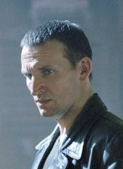
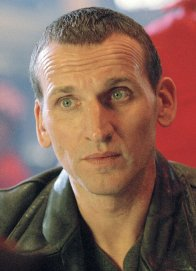
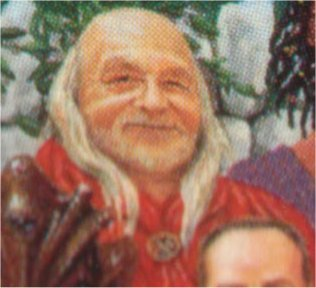
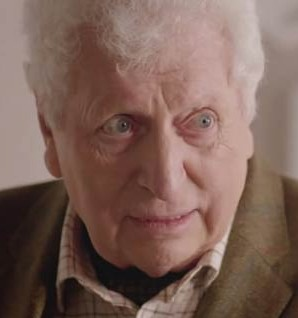

The History of The Time Lords Part VIII
POST WAR ERA
The Last of the Time Lords and Gallifrey's Return

TABLE OF CONTENTS
Click on paragraphs to see color coding for sources
THE HISTORY OF THE TIME LORDS PART VIII: THE POST WAR ERA
The Last of the Time Lords and Gallifrey's Return
This Time Line covers the life of the Doctor in the new TV series era. It stars at the end of the Time War with the 9th Doctor and goes until the end of the Universe. All dates are given in Gallifreyan years (which are the same as Earth years) and are based off the age of the Doctor. The AF Numbers in Parenthesis refer to the Doctor's age in the New TV Series, as quoted in"Aliens of London" and other new stories.
There is an age discrepancy due to the 9th Doctor giving his age at the time of his regeneration as being about 800 years old. Yet the 6th Doctor was 953 years old when he regenerated. This contradiction might best be explained by the Doctor's rebirth/resurrection with a new body in the City of the Saved after his death a the start of the Time War. For the purposes of this website, I'm assuming that these new, lower numbers, represents his age since his resurrection in the City of the Saved and have used that conclusion for my calculations of dates. From this point forward I will note the New Series version of the Doctor's age in parenthesis with an AF (After the Founding of the City), along with the Doctor's actual age.
(Alternately, since people age slower when on board the TARDIS, this new lower age might be his correct age when all "of time and space" is taken into account. But it seems unlikely that there would be this much distortion.)
The following information contains many spoilers.
1691~
(after the death of the Time Lords)
The entire Universe convulses.
It is now much more dangerous to change history then before the Time War. For the Laws of Time are suspended
allowing the Reapers to devour whatever timeline they please when history is re-written.
The Protocols of
Linearity don't function at all.
Without the Time Lords, the History becomes vulnerable to Infinite Temporal Flux.
Time can now be re-written in an instant.
Even the Doctor is unsure what will happen if someone violates the first Law of Time.
Without the Prime Eye or Harmony the universe begins to generate alternate universes for different quantum uncertainties.
The Vortex begins to collapse causing the Web of Time to fracture into numerous alternate universes - drastically reducing
the total lifespan of the Universe.
By this point billions of parallel universes
have been created and are stacked on top of each other. They are separated by the Void.
Temporal
fallout from the collapse of the 5th Dimension (the Vortex) begins to
kill the populations of the worlds it contaminates.
Reapers now destroy many worlds that develop divergent paradoxical timelines
, while several other lifeforms that live in the Vortex (like the Wraiths) begin to die.
1691~
(after the death of the Time Lords)
Without the Time Lords to enforce
the laws of physics magical phenomenon being to appear in the Universe.
The activity of the Racnoss, Carrionites, Weeping Angels, and the Beast might have been stirred up by the end of the
Time War.
1691~
(784~ AF)
(The Doctor is about 800
AF (1692~)
years old)
Second Diaspora:
Numerous people on Gallifrey begin placing recordings of their thoughts and recollections inside Memory Lanterns and
releasing those Lanterns into the Vortex to be scattered across space-time. They hope that some part of themselves
will survive, but most if not all of these are destroyed by the time winds in the Vortex.
The Doctor believes that he would be able to detect another Time Lord (even one who is out of sync), and it took the
Archangel Network to hide the Master on Earth.
So its likely that the Doctor can detect other Time Lords from Gallifrey's past when he's in the same time zone.
If so, then he can tell that they are from before the War and knows not to contact them.
While the Doctor fears the re-emergence of any Time Lords from the end of the Time War, he is quite desperate to find
any non-War era Time Lords. Part of the reason for this is that he wants to find someone who can forgive him
for destroying the Time Lords.
On the planet Crafe Tec Heydra there is a pictorial depiction of the War and the final battle. It shows the Doctor
as the only survivor and says"You Are Not Alone..."
Aunts of Iris's House remove Eliot the Tree from the Gallifrey using the Ringpull. They take the tree to Hyspero
where he is protected from the Scarlet Empress by the Clockworkers.
By this point there are only 5 (full) Time Lords (ie Time Lords bonded with a TARDISes) left in the Cosmos.
- The Doctor and his TARDIS
- The Master
- The Minister of Chance
- Iris Wildthyme (who never graduated from the Academy but is bonded with a TARDIS)
- Marnal is still symbiotically linked with the Doctor's TARDIS.

The New Doctor (Christopher Eccleston)
"He's like fire and ice and rage. He's like the night and the storm and the heart of the sun. He's ancient and forever.
He burns at the center of time and he can see the turn of the universe. And...he's wonderful."
- Martha Jones
1691~
(784~ AF)
(right after the Time War / when he's about 800 years old)
The Doctor regenerates for the ninth time.
It's likely that the damage and strain of the Time War is why the Warriors body is wearing thin. With the
War over, his unconscious triggers a regeneration.
He might have decided to regenerate because there is no longer any point in remaining in the Warrior incarnation.
The Doctor will bury his memories of his 9th body deep in his mind, keeping him a secret from his conscious mind.
The Doctor is filled with blood, anger, revenge. He is also quite guilt ridden and depressed after destroying his
home. Despite this he will enthusiastically torture a Dalek if given the chance. He is even more lonely
now then he was as a child.
He believes that everything has its time and everything dies. In stressful situations he will slander entire species.
Recognition of his own minor mistakes can lead to rants that can last almost a half-hour. He likes two sugars
in his tea. By this point the Doctor can speak 5 billion languages.
This new Doctor is Time's Champion.
He continues to travel the Universe in his aging Type 40 TARDIS. He generally tries to avoid taking direction action,
but instead tries to convince and advise the locals of any given time zone on how they should solve their problems.
1691~
(after the death of Gallifrey)
Many Time Aware and Time Active species, such as the Time Agents of the 51st century, believe the Time War was a legend.
They regard the Rulers of Time (or Time Lords) as myths and whispers of the high species. However a few Time Active species know
of the War and believe that none of the Time Lords survived the Final Battle.
They believe that the Moment was responsible for destroying Gallifrey, Skaro, and about 100 other worlds.
?? (after the Time War)
The Shadow Proclamation of the Humanian Era, the Human Time Agency of the 51st century,
and the Council of Eight at the End of Time attempt to police and protect what is left of History. The 51st Century Time Agents are currently the best hope of the Spiral Politic against temporal marauders.
Catalyst: Leela is captured by the Zedni while wearing noble robes. She is interrogated by someone seeking information about Gallifrey. Free of the bio-fields of Gallifreyans, Leela's body ages a year with every passing day. By this point Gallifrey and its people are spoken of in legends and fairy-tales as a lost world.
1692?
(over a year after Catalyst)
The Time Vampire: The future Time Vampire
version of Leela travels back in time to ensure that her human self completes her transition into a gestalt made up
of multiple versions of herself. Like other Time Vampires, she was created through significant paradoxes in her
timeline. Time Vampires ride the tides of time, and have the ability to wipe out creation, fortunately all they
desire is to observe the beauty of Time through the eyes of their younger selves. The Time Lords regard such
paradoxical beings as abominations, and considers capturing and sustaining one to be a crime.
?? (after the Time War
/ probably the 9th Doctor)
The Doctor spends a night counting up how
many children were on Gallifrey at the time of the Final Battle. He discovers that 2.47 billion Gallifreyan
children were lost on that day.
?? (during the 9th Doctor)
The Mirror of Nine: The Dark Design of
the Doctor's mind (aka the Dream Lord) escapes and tries to trap the Doctor in part of the Land of Fiction that he
has appropriated.
?? (after Day of the Doctor / Before Rose
/ after the Time War)
The Doctor changes his TARDIS's Desktop Theme to the
Coral Setting.
This is the first time the inner doors were mapped directly onto the exterior doors.
1802?
(885? AF)
(years before The Christmas Invasion from the Doctor's POV)
The Doctor uses a switch that accelerates the TARDIS's
passage through the Vortex for the last time until right before The Christmas Invasion.
This switch is probably the helmic regulator.
?? (after the end of the War)
Political Animals: By this point Faction Paradox believe
they are the only Faction of the Time War left. They come to
London in 1762 and 1774 in part to recruit new members.
Betes Noires & Dark Horses
1805-6
(personal age 1131-2?)
(1782-1783 AD / story lasts 1 year / 113-114 years after Gallifrey is destroyed)
The Adventuress of Henrietta Street: The 8th Doctor has pulled out of the Time War by the TARDIS Compassion. His memories
have been deleted so that he could carry a compressed copy of the Matrix to safety. He encounters the
Babewynswhich are ape like shadows of the Time Lords which live outside human understanding. The 8th Doctor has the
heart that connects him to Gallifrey removed from his chest thus severing his link with the (now non-existent) Prime
Eye of Harmony. It appears that all the other surviving Time Lords also have their hearts removed
(or re-anchored to the Clone Gallifreys).
Sabbath has the 8th Doctor's heart implanted inside himself. The 8th Doctor makes Earth his new anchor point by marrying
the human Scarlett. However later events will show that the single anchor point of one Time Lord isn't enough to protect
the Web of Time from other time travelers.
1806
(personal age 1132?)
Anachrophobia:
The surviving members of Faction Paradox now appear as paradoxical clock people.
These clock people give others the chance to alter their past,
and thus make their current self a paradox. Sabbath manipulates
the 8th Doctor into destroying the clock people, and thus ending the threat of Faction Paradox once and for all.
1806
(personal age 1132?)
(114 years after Gallifrey is destroyed)
Camera Obscura: Sabbath
might be Time's Champion now. He is working for the Council of Eight, who are trying to become the new Lords of Time.
The
The 8th Doctor (whose memories have been deleted)
begins growing a new heart (and thus a new connection to the Earth presumably).
1806
(personal age 1132?)
(114 years after Gallifrey is destroyed)
Zero Time: Without the Time Lords History continues to be vulnerable to Infinite
Temporal Flux.
Without the Prime Eye or Harmony the universe begins to generate alternate universes for different quantum uncertainties.
Time can be re-written in an instant.
The Vortex begins to collapse causing the Web of Time and the Primary Timeline to fracture into
billions of alternate universes - drastically reducing the total lifespan of the Universe.
Reapers now destroy many worlds that develop divergent paradoxical timelines
, while several other lifeforms that live in the Vortex (like the Wraiths) begin to die.
Temporal
fallout from the collapse of the 5th Dimension (the Vortex) begins to
kill the populations of the worlds it contaminates.
Sometimes Never...: The 8th Doctor's (whose memories have been deleted) child, Miranda, dies. Sabbath kills himself to destroy the Council of Eight. The only surviving member of the Council of 8 is a crystalline skeleton named Soul. Soul paradoxically absorbs a new form and information from the 8th Doctor. The Web of Time is shattered, the walls of reality close again and all possible universes are allowed to exist in their own parallel timelines each separated by the Void. It becomes virtually impossible for a TARDIS to visit an alternate reality. This healing is likely due to the 8th Doctor making Earth a new anchor point by marrying the human Scarlett. Fortunately history seems to be able repair much of the damage that occurs, almost as if some intelligent force is at work. From this point on,
Soul takes Sabbath's timeship and the Star Killer Vortex Gun and flees with Miranda's daughter Zezanne. They are drawn to I.M. Foreman's Junkyard and land there in 1963 where they take the names Doctor and Susan.
1806
(personal age 1132?)
(probably right after The Gallifrey Chronicles)
The 8th Doctor
returns to the pre-Time War era (his own correct point in Gallifrey's History).
1807 (900 AF) Series 1 probably occurs in this year.

Rose: The Doctor picks up Rose Tyler as a traveling companion. He might have taken a side-trip at the end of the story to research her and give her a bicycle when she was 12. Rose is his first companion after the Time War. Unlike before the War, the Doctor starts becoming much more attached to his companions and suffers significant distress and depression whenever they stop traveling with him. He will quickly reach the point where he is willing to bend the First Law of Time just to please her. His fondness for her might, in part, due to the fact that Susan's original name was Arkytior which is High Gallifreyan for 'rose.'
1807 (900 AF) (5,000,000,000 AD / only a few hours after the end of Rose)
The End of the World: The Doctor doesn't seem to know the Face of Boe. In this early part of the season he seems to enthusiastically throw himself into dangerous situation but shun normal socialization. Its almost as if he has a death wish.
1807 (900 AF) (1869 AD / only a few hours after the end of End of the World)
The Unquiet Dead: The last of the Gelth travel through a weak point in the Vortex through the Cardiff Rift to Earth, where they are destroyed. This is also the same year that Jack Harkness arrives from the year 200,100 AD.
1807 (900 AF) (900 years after starting over on counting his age / about 100 years after the Time War ended / after 900 years of traveling time and space / ~12 hours after the end of Rose / he might actually be older than 900 years old)
Aliens of London / World War Three: The Slitheen spaceships might have been recovered by humanity and used to advance their technology to the levels seen in future stories.
1807 (900 AF) The Doctor and Rose travel to Justicia.
1807 (900 AF) The Love Invasion
1807 (900 AF) The Clockwise Man
1807 (900 AF) The Monsters Inside
1807 (900 AF) Winner Takes All
1807 (900 AF) Art Attack
1807 (900 AF) Dalek: One of the last two surviving Daleks is desperate enough to escape from Humanity that is uses temporal energy from a human to heal itself. This results in a partially humanized Dalek. Once it realizes this the Dalek exterminates itself.
1807 (900 AF) (200,000 AD)
The Long Game
1807 (900 AF) Father's Day
1807 (900 AF) (right before The Empty Child)
The Children that Time Forgot: The Doctor's TARDIS is put on trial for the crimes of the Time Lord Marnal.
1807 (900 AF) ( he's been traveling for 900 years / He's been going by the name the Doctor for 900 years / probably weeks if not months after Father's Day )
The Empty Child / The Doctor Dances
1807 (900 AF) Boom Town: By this point the Doctor is starting to be able to relax and start enjoying domestic socialization again. While having a conversation, Blon Fel Fotch Pasimir Day Slitheen tells the Doctor that he flees long term responsibility. She also says that he occasionally allows his enemies to live just convince himself that he's a good man. The Doctor doesn't disagree with either of these statements. The Heart of the TARDIS might have converted Blon back into a egg (rather then killing her) because it could see some worth in her.

The Bad Wolf and the new Doctor (David Tennant)
1807 (900 AF) (200,100 AD / a long time after the events of Rose)
Bad Wolf / The Parting of the Ways: By this point the Doctor is just wanting a quiet life. The Emperor Dalek (the first Dalek created by Davros) is discovered in Earth's future. He has changed history, setting humanity's development back about 90 years. He is turning the human race into Daleks but selecting one cell out of every billion from his victims. By so doing he has created a total of 400,000 Daleks who have constructed 200 Daleks saucers . The Doctor plans to destroy all of the Daleks with delta waves of Van Cassedyne energy, but this will also kill all life on the Earth. The Doctor realizes that he doesn't have the strength to choose the lesser of two evils, as he did when he destroyed Gallifrey, and abandons this plan. He begins to wonder if its time for his life to end.
Rose looks into the TARDIS's Heart and is recruited by the TARDIS to save the Doctor and stop the Daleks. She becomes a composite of Rose and the TARDIS, known as the Bad Wolf, and is imbuned with godlike powers of Artron Energy the Space-Time Vortex. The Bad Wolf is capable of modifying and distorting probability on a massive scale throughout history. She is effectively the will of the TARDIS (or possibly the Universe) incarnate and is possibly creating the plot of the Doctor's entire life. While she is the Bad Wolf she describes the Doctor as being her's. She can pilot the TARDIS through the Vortex. She use that Power of Creation to destroy every Dalek in the Universe. She claims that she is responsible for ending the Time War. She also brings Jack Harkness back to life by making him a fixed point in time. He can never stay dead because the fact of his life is anchored into history itself. This makes him an obscene violation of the Laws of Time such that it takes a significant effort of will for either the TARDIS or the Doctor to be near him. Despite numerous other deaths, Jack is the only person here that the Bad Wolf decides to resurrect. She seeds the idea of the Bad Wolf across time and space to ensure her own creation. She probably arranges for the weak point in space-time at Bad Wolf Bay in Norway that allows the Doctor to say goodbye to her in Doomsday. It is unclear what other changes to the Universe she might have made during this time, but the corruption in time caused by her actions might have unsealed the Medusa Cascade. It was this that allowed the New Dalek Empire to construct a Reality Bomb to destroy the Universe. The Reality Bomb works on the same principles as the Time Destructor, by aging matter till the elections and weak and strong nuclear forces crumble and the atoms fall apart.
The Doctor triggers a regeneration to draw this energy out of Rose and vents it back into the TARDIS. Rose's memories of her time as the Bad Wolf are blocked by the TARDIS because the knowledge is forbidden. Once this is done he allows the regeneration to proceed - purging his body of the remaining excess energy. He considers himself part of history and takes direct action to solve the problems he encounters. He considers himself to be Earth's champion. This new incarnation is still Time's Champion. He has a rather ruthless tendency to not give any species or person a second chance after they have fallen short of his ethical views. This can result in a dispassionate or even enthusiastic exterminations of those failures. This incarnation still has fillings in his teeth. Unlike his previous incarnation, he does enjoy interacting with families, and building extended social bonds. He begins wearing glasses to make himself look clever and wears tennis shoes as an homage to his 5th incarnation. He hates pears, being shot at, Margaret Thatcher, and hospitals, but loves the little shops that can be found in a hospital. He thinks knowing everything would be boring. He also loves the music of Ian Dury and the Blockheads, The Muppet Movie, and werewolf stories Its possible that the Bad Wolf deliberately shaped the Doctor new body and mind to fit with Rose's wishes.
?? Captain Jack Harkness is abandoned by the TARDIS, which sees him as a paradoxical fixed point in time. He has a small amount of TARDIS coral and has been using it to grow his own TARDIS. After the destruction of the Torchwood Hub, the baby TARDIS coral from Jack's desk, ends up in the Black Archive inside the Tower of London. Jack might be responsible for safeguarding Torchwood through several thousands of years of humanity's development.
1807 (900 AF) Series 2 probably occurs in this year.
1807 (900 AF) (right after Parting of Ways)The Christmas Invasion: The Doctor defeats the Sycorax. In the process he loses his hand is sword fight. A new hand grows, which is much better at fighting than the old one. The Doctor changes history by removing Harriet Jones from the position of Prime Minster before she can serve out the 3 terms she was destined for. He might have used the Time Lord Power of Creation to do this. The Sycorax came from the world Fire Trap in the JX82 system and are feared by species all over the Milky Way. According to legand they would be one of three species left at the end of the Universe. T he Sycorax are quite possibly a splinter group from the Faction Paradox. The Doctor claims to have met Arthur Dent (indicating that there's some sort of connection between the Doctor Who universe and the Hitchhiker’s Guide universe).
1807 (900 AF)
New Earth: The Face of Boe changes his mind about revealing his great secret to the Doctor (possibly because he was hoping to reveal it to the Doctor closer to the events of Utopia?)
1807 (900 AF)
Stone Rose: The Doctor spends months learning to sculpt from Michelangelo
1807 (900 AF)
Tooth and Claw: By this point Rose is starting to remember some of the actions she took as the Bad Wolf. He (or the TARDIS) will replicate the observatory he encounters here inside the TARDIS. After resolving the potential change to history, the Doctor says in this time zone long enough to be knighted for his actions. But he is also effectively banished from the British Empire.
1807 (900 AF)
School Reunion: The Doctor stops the Krillitanes from discovering the Skasis Paradigm. They tempt him with the possibility of using the Paradigm to bring back the Time Lords and undo the Time War.
1807 (900 AF)
The Girl in the Fireplace: By this point the Doctor is calling himself the Lord of Time.
1807 (900 AF)
Rise of the Cybermen / Age of Steel: The TARDIS falls through a crack between universes. The Doctor donates 10 year of his lifespan to recharge a TARDIS Power Cell so that he can leave this parallel reality. He uses the TARDIS to seal the crack after returning to his primary timeline. The crack in time the TARDIS falls through could be the same one that Torchwood later opened in Army of Ghosts.
1807 (900 AF)
The Impossible Planet / The Satan Pit: The Doctor encounters the Beast from before there was light, space, and matter, and before this Universe. This challenges his most fundamental belief on how the Cosmos works.
1807 (900 AF)
Army of Ghosts / Doomesday: The Cult of Skaro emerges from the Void between alternate timelines and attempts to take over the Earth using the millions of Daleks in the Genesis Ark. It is possible that this invasion that was masterminded by the Cult is a change in the way history was supposed to go. The Doctor has all the Daleks (except the Black Dalek named Sec) sucked back into the Void. Sec escapes using a built in device that allows him to create an Emergency Temporal Shift. Rose is trapped in the Alternate Earth with Micky. By this point billions of divergent realities have been created. When Rose was the Bad Wolf she probably created the weak point in space-time at Bad Wolf Bay in Norway that allows the Doctor to say goodbye to her . The Master will later exploit this weak point in The Sound of Drums to get the Toclaphane to invade the Earth.
1807-1810 (900-903 AF) Series 3 probably occurs in this range.
1807 (900 AF)The Runaway Bride: Dalek Caan arranges for Donna to appear inside the Doctor's TARDIS. The Last of the Racnoss attempts to free the Racnoss ship at the center of the Earth. She is destroyed and the ship is flooded.
1807 (900 AF)
Smith and Jones: By this point the Doctor is sure that his brother (Braxital) is dead. He still hasn't fixed all of the TARDIS systems that were broken when he stole it from Gallifrey.
1807 (900 AF)
The Shakespeare Code: The Carrionites are captured by the Doctor in a transparent sphere. He stores the sphere inside the TARDIS. By this point the Doctor might not even know his own name.
1807 (900 AF)
Gridlock: The Face of Boe (aka Jack Harkness) tells the Doctor that he is the last of the Time Lords but that"you are not alone." This is a warning about Professor Yana.
1807 (900 AF) (1929 AD)
Daleks in Manhattan / Evolution of the Daleks: Dalek Sec believes that Dalek culture has led to their races extinction. He tries to create a new individualized race of Human/Dalek hybrids but is betrayed by the other members of the Cult. The Doctor faces the Cult of Skaro. All of them are destroyed except Caan who escapes using his emergency temporal shift (which was probably augmented by the Dalek's Military Computer).
1807 (900 AF)? (after Daleks in Manhattan)
Caan’s emergency temporal shift allowed him to travel into the wild fire of the time lock that covers every battle of the Time War. In doing so he faced his own death a thousand times (probably because it took a thousand tries to rescue Davros) and lost his mind. Caan saw the infinite complexity and majesty of time and develops into a Bad Wolf. Caan might have been inspired to do this when Rose explained how she became the Bad Wolf in Doomsday. He begins plotting to save the Multiverse from the Daleks (and possibly the damage the Rose Bad Wolf did in Parting of the Ways). Meanwhile Davros breeds (from his own tissue) the New Dalek Empire…which promptly locks him in a vault and uses him as breeding stock.
1807 (900 AF) (about 4 days after Smith and Jones from Martha's POV)
The Lazarus Experiment: With the aid of the Master, Professor Richard Lazarus devises a machine that sonic waves to alter the cells of a life form. It can rejuvenate the cells making a person young or age them. The Master makes sure that Martha Jones sister is working for Lazarus in order to set a trap for him. This might have been achieved by revealing the roll the Doctor played in the death of Martha's niece Adeola in Army of Ghosts.
1807-1809 (901-902 AF) (this story lasts 2.75 years from the Doctor's POV)
The Infinite Quest: Buy ~3907 AD the Doctor had 3,500 outstanding convictions, including 1,400 traffic violations, 250 counts of evading library fines, 18 counts of planetary demolition. Another 6,000 charges had yet to be taken into consideration. All of this earned him 2 billion year prison sentence - which he escaped from.
1809 (902 AF) (at least 2 months after Smith and Jones from Martha's POV)
Human Nature / The Family of Blood: In order to hide from the Family of Blood until they die of old age the Doctor uses his TARDIS's Chameleon Arch to turn himself into a human. This is the first time he's tried the Chameleon Arch. His DNA and memories are that of a human male. He then hides on Earth in 1914 AD. During this time he falls in love with Joan Redfern. The Family finds him and he is forced become a Time Lord again and to capture or destroy them all the members of the Family.
NOTE: This story is similar enough to the original Human Nature novel that the two must be connected in some way. I postulate that this is the version of the story that occurred after I.M. Foreman's Universe-in-a-Bottle corrupted the Classic Timeline during the Time War (see"The Ancestor Cell"). It is possible that the TARDIS chose the backstory and time zone where the Doctor hid, in an attempt to ensure that Joan still ended up falling in love with the Doctor and Timothy was inspired by the Doctor.
1809 (902 AF)
Blink: the Doctor stops the Weeping Angels who are attempting to feed on the TARDIS's temporal energy. The pictures of the Weeping Angles that Sally gives the Doctor might have become the very Angels that sent him back to 1969.
NOTE: As with Human Nature, this story is similar enough to the original "What I did on my Christmas Holidays by Sally Sparrow" short story that the two must be connected in some way. As above, I postulate that this is the version of the story that occurred after I.M. Foreman's Universe-in-a-Bottle corrupted the Classic Timeline during the Time War (see"The Ancestor Cell").
The old and new Masters
Utopia: The Doctor stops off in Cardiff to re-fuel the TARDIS (after being partially drained by the Weeping Angels?) In an attempt to flee the paradox that is Jack Harkness, the TARDIS travels outside Gallifrey's old noosphere boundaries. Its arrives on Malcassairo where the last corporeal members of Post-Humanity are attempting to travel to the planet Utopia. There they meet the Post-Human Professor Yana who turns out to to be the Master. The Doctor doesn't seem to recognize the Master's face until Martha convinces him that the Watch is part of a Chameleon Arch. The Master uses his pocket watch to be reborn and then (after being shot) regenerates into a new body. This is his first regeneration in his resurrected body. The Master tried to resist his regeneration when he was in his Derek Jacobi body. He wasn’t sure if he could regenerate or if he would die. The Doctor disables the TARDIS preventing it from traveling anywhere except the 18 months from 2008 and the year 100 trillion AD. This version of the Master is much more interested in women then some previous incarnations. He also enjoys frequent massages the Scissor Sisters, and the The Rogue Traders. Note: The new Master's personality is similar to General Tannis in Death Comes To Time, could they be the same person?
1809 (902 AF)
The Master arrives in the 21st century and creates the identity of Harry Saxon. He sets up the Archangel Satellite Network, destroys the Racnoss Webstar, and helps design the Valiant for UNIT. He uses this to lightly hypnotize humanity (it might involve boosting the Master Reality Quotient/Charisma). He collects the last corporeal Post Humans from the end of the Universe and turns them into the Toclafane. He marries a human woman named Lucy and writes the novel Kiss Me, Kill Me. The Master envies the Doctor for being able to destroy Gallifrey. The Master appears to believe that the destruction of Gallifrey means that he and the Doctor should stop fighting over the universe - at least until the universe is ready for them again.
1809 (902 AF)
The Sound of Drums: Using the Archangel Network the Master makes himself ruler of Earth. The Master uses his Laser Screwdriver to force the Doctor's Biogenic Molecules to age him 100 years (and disable his ability to regenerate). He modifies the to Doctor's TARDIS into a Paradox Machine (probably using Faction Paradox tech). This machine will connect the year 2007 and the year 100 trillion, creating a massive change in the History of the Universe.
The Master's Alternated Timeline
1807 (902 AF)The Sound of Drums: The Paradox Machine lets the Master change history by bringing 6 billion Toclafane back to the 21st century so that they can invade the Earth. They begin by killing 10% of the Earth's population. The Master begins to prepare an invasion fleet of 200,000 war rockets equipped with Black Hole Converters . These stellar manipulators could turn planets into black holes. He planed to use these to make an Empire of new Time Lords. He has his face carved on to Mt. Rushmore and has numerous statues of himself installed all over the planet. In addition to Lucy, he marries numerous other human women. Given his seduction of Galleia in Time Monster, it is possible that the Master actually enjoys having power over women.
1808 (903 AF) (1 year after Sound of Drums from the Doctor's POV)
The Last of the Time Lord: The Master uses his Laser Screwdriver to age the Doctor another 900 years while simultaneously preventing him from regenerating. The Master plans to begin his conquest of the Universe by opening Braccatolian Space for his war rockets. The Doctor uses the psychic energy of all the people of the Earth to rejuvenate himself. The Doctor forgives the Master for everything that he's done and blames himself for all of it.
The Last of the Time Lords: The disabling of the Paradox Machine causes the above timeline to vanish leaving only the people on the Valiant Aircraft Carrier to remember that alternate year. The Master is shot and refuses to regenerate just to punish the Doctor. He appears to die and his body is burned to a crisp, however his Gallifreyan Signet Ring is recovered by Miss Trefusis. This ring contains the Master's genetic code and biodata extract. This ring might have powers similar to the ones the Doctor Patience and the Monk wore. The Doctor realizes that Jack Harkness is the Face of Boe and recovers the hand he lost in The Christmas Invasion. Anyone who was on the Valiant when the Master changed history and was off of it when Jack destroyed the Paradox machine would have been effectively killed by Jack. Similarly anyone who was not on the Valiant when the Master changed history but were on it when Jack destroyed the machine would find that they had a duplicate living on Earth who had not experienced the extra year that they had. Great premise for a Torchwood episode...
1810 (903 AF) Most if not all of the stories of Series 4 take place in this year.
1810 (903 AF) (a few years after the Doctor destroyed Gallifrey)
Timecrash / Voyage of the Damned: The 10th Doctor meets his 5th Incarnation when their TARDIS's appear to Eigen Ram each other. The Doctor accidentally leaves the defenses of the TARDIS disabled, allowing a collision with the starship Titanic to occur.
1810 (903 AF) (after Daleks in Manhattan)
With the unsealing of the Medusa Cascade (which might have been accidentally caused by the Bad Wolf), the New Dalek Empire creates the Reality Bomb inside a massive station called the Crucible. Using a Magnetron they begin changing history by stealing planets and assemble them into a perfect gravitationally balanced engine. These 27 planets will include Adipose 3, Callufrax Minor (the disguised second segment to the Key to Time) , Clom, Earth, Flane, Griffoth, Jahoo, Lost Moon of Poosh, Pyrovillia, Shallacatop, Strepto, and Woman Wept . The Dalek Crucible was massive enough that the stolen planets orbited it. When the planetary alignment field is activated it takes all the z-neutrino energy the planets generate and compresses it into a single string. This string is fed into the heart of z-neutrino energy inside the Crucible, creating a wave of chain reactions capable of canceling out all electromagnetic energy. Light vanishes and all matter disintegrates on quantum level until its very waveform is canceled out. The Crucible is positioned on the rift at the heart of the Medusa Cascade. The rift is unsealed. Using the rift the Reality Bomb’s wave will spread throughout the entire Multiverse, canceling all matter and electromagnetic energy and destroying the void (the barrier between alternate timelines). It will destroy everything in every timeline.
Its worth noting that the Master considered the Time War to be over once the Dalek Emperor captured the Cruciform. It’s possible there is some connection between this device and the Crucible used by the Supreme Dalek. The effect of the Reality Bomb is very similar to the effect the Daleks achieved using the Apocalypse Element, which was capable of shredding the raw fabric of space-time in a chain reaction that could only be stopped with power of the Prime Eye of Harmony. Also, one of the planets that the Daleks steal is Calufrax Minor. Calufrax was a segment to the Key to Time. It holds the elemental force of the Universe and embodies the fundamental nature of the universe. This i s probably the key to how their weapon works.
1810 (903 AF) <> (after rescuing Davros)
Caan relizes the truth about the Daleks– that they will destroy everything. Caan begins manipulating the timelines throughout history to arrange the Biological Meta-Crisis that creates DoctorDonna and DonnaDoctor – The Children of Time. At the appropriate point these Children will destroy the Daleks and save the Universe. Caan probably picked Donna Noble as she seemed the least threatening and most harmless human he could find – someone Davros would never consider to be a threat.
1810 (903 AF)
The Doctor's Daughter: Detecting the future existence of the Doctor's daughter the Doctor's hand drags the TARDIS to the planet Messaline. Once there the Doctor is forced to use a machine which takes his diploid cells, splits them into haploids and produces a Time Lords "daughter" Jenny (a shorting of"generated anomaly"). She is biologically a Gallifreyan and a Time Lord (making her a Scion of Gallifrey). She has two hearts, but does not have all the abilities and senses of a Time Lord, including an inability to control and resisting radiation. The Doctor leaves Messaline believing that Jenny is dead but her biogenic molecules regenerate the damage (with out changing her body) and she takes a space ship to go looking for the Doctor. Effectively Jenny is created by Time.
1810 (903 AF) (sometime after The Doctor’s Daughter)
Jenny puts a message in a bottle for the Doctor, and throws it into space. The message explains that she is alive and that she spends her time saving planets and civilizations.
1810 (903 AF) (51st century)
Silence in the Library / Forest of the Dead: The Doctor is accidentally summoned by to the Library by the human archaeologist River Song from his own future. She ends up having her mind transfered into the virtual world contained in The Library's data core in much the same manner as the Time Lords did with the Matrix. By this point the Doctor's mind is once again nearly full of memories. He no doubt needs to have some of them archived in the TARDIS Memory Store.
1810 (903 AF) (claims to be 903)
The Nemonite Invasion
1810 (903 AF)
Turn Left: Donna Noble's history is sabotaged by the Trickster so the the Doctor dies while fighting the Racnoss. The corrective forces of History manage to largely protect the Web of Time, despite the Doctor being absent for The Shakespeare Code, Daleks in Manhattan, The Fires of Pompeii, The Unicorn and Wasp, and all subsequent (from the Doctor's POV) adventures set before 2007 AD. This would indicate that the Doctor's interventions tend to improve the local short-term situations, but generally aren't essential for the survival of the larger nexus points of the Web of Time. Rose corrects what problems do occur by ensuring that Donna's history unfolds as it should. The Trickster might be an agent for the Black Guardian.
The new Doctor (notice the new body?), and the Human Doctor
The Stolen Earth / Journey's End: The Daleks use a magnetron to steal the Earth. This changes estabilished history. Earth is the 27th planet, and the last plant they needed to detonate the Reality Bomb that will destroy this universe and every single alternate universe. The Doctor is hit by a glancing blow by a Dalek neutralizer and this triggers a regeneration (reducing his number of remaining regenerations to one). Decided to keep his current form, the Doctor uses the hand that he lost in a fight with the Sycorax to store the excess artron energy aborting the regeneration as soon as his cells have reset to a healed state. As had been arranged by Dalek Caan, the human Donna Noble touched the severed hand, which was still charged with energy, and it caused a two way Human-Time Lord Biological Meta-Crisis, creating the Children of Time. Some of the energy attempted to regenerate the hand as if it was the Doctor and used Donna’s body to fill in the missing biodata instructions. It created a fully functional half Human, half Gallifreyan body in the shape of the Doctor. This body had only one heart and would age like a human (with no regeneration ability), but its mind had all of the the Doctor's experiences. It was the first time an essentially human body had successfully held a Time Lord consciousness. While most of the artron energy was used to create the new"human" Doctor the rest infected Donna's biodata with the Doctor's biodata giving her human mind all the experiences of the Doctor. The Children of Time became the nexus for the future existence of all possible timelines, for only they could save the Multiverse. Using a control panel that was secretly prepared by Caan the Children of Time defeat and destroy the Daleks and destroy the Crucible. Davros names the Doctor The Destroyer of Worlds. The magnetron returns 26 of the planets to their point of origin and the Doctor tows the Earth back into Sol system. The Human Doctor ends up in the alternate universe after falling in love with Rose Tyler. The presence of Bad Wolf Bay implies that all of this was arranged by Rose when she was the Bad Wolf in Parting of the Ways. The Doctor might have arranged for Rose to be locked into the parallel universe in an attempt to prevent her from corrupting time any further. Unfortunately the experiences of a Time Lord couldn't be held in Donna's human brain for more then a few hours without killing her. The Doctor was forced to mind block all of her experiences with him to save her life. By this point the very image of Rose Tyler, Martha Jones and Donna Noble will provoke loads of guilt in the Doctor.
By this point the Doctor realizes that everyone who travels with him becomes a being willing and capable of committing massive amounts of violence in his name. Despite the fact that they are trying to (and usually succeed in) helping. This horrifies him to his very soul. This is why the Doctor never stays in any time zone very long. He can’t stand to see what people will sacrifice and do in his name.
1811 (904 AF)
The Next Doctor: The escape of the Cybermen from the Void, might have been a side effect of the corruptions of time caused by Rose or Caan Bad Wolf.
1811 (904 AF) (The Doctor claims to be 900 years old)
Dreamland
1811 (904 AF) (while the Doctor is traveling alone)
Number 1, Gallows Gate Road
? Time beings to bleed (probably from the retro-shock of the Time Lords attempting to enact the Final Sanction). This accelerates the Ood's development. They begin to be able to see the future and know that the End of Time is coming. The send a message for the Doctor.
1811? (904 AF)?
The Waters of Mars: The Doctor decides that as the last of the Time Lords it is his right to re-write the Laws of Time. He violates the 1st Law by saving two humans when history recorded that that were supposed to die. The Doctor receives a message from the Ood but instead of answering it spend quite a bit of time traveling the cosmos.
1811 (904 AF) (The Doctor is 904 years old / After Waters of Mars, but before the End of Time)
Day of the Doctor: The Doctor marries Queen Elizabeth I and takes her virginity. But the relationship falls apart leading to her wanting him dead.
? Everyone on Earth (and many other worlds) begin having bad dreams of the Master but most can not remember them. This is probably a retro-effect from the creation of the Master Race.
1811? (By the time of the 11th Doctor)
The Doctor makes the TARDIS drawing room his private study.
Gallifrey over Earth and the new Doctor (Matt Smith)
"I’ve lived a long life and I’ve seen a few things. I walked away from the Last Great Time War. I marked the passing of the Time Lords. I saw the birth of the universe and I watched as time ran out, moment by moment until nothing remained. No time. No space. Just me. I’ve walked in universes where the laws of physics were devised by the mind of a madman. I’ve watched universes freeze and creations burn. I’ve seen things you wouldn’t believe. I’ve lost things you’ll never understand. And I know things. Secrets that must never be told. Knowledge that must never be spoken. Knowledge that will make parasite gods blaze."
- The Doctor
1813 (906 AF) (The Doctor claims to be 906 years old)
The End of Time: The Master is recreated by his followers on Earth using the Potions of Life (as described in the Books of Saxon) and the biometrical signature (which had been imprinted on his wife Lucy Saxon). This might be related to the Morg Death Worm. This process is sabotaged by his Lucy Saxon. The result is that the Master is now"bleeding" artron energy at an amazing rate. Despite consuming vast amounts of bio-matter, this wound is still slowly killing him. Its possible he might have finally succumbed the the Vampiric genes that were used by Rassilon to create the biogenic molecules. This possibility was predicted by Faction Paradox and exploited for making their armor. Realizing that survival is impossible he decides to use his Powers of Creation to make use of this leaking energy. Presumably he no longer cares about the corruption to Time this causes. This gives him several Super-Gallifreyan abilities. The Master uses alien technology to turn all 6 billion humans on the planet into copies of himself creating the Master Race. Upon realizing the significance of the drumming in his head the Master uses a Whitestar Diamond (provided by Rassilon) to boost the link and pull Gallifrey out of the Time War Era and into the Sol System. The escape of the Gallifrey from its time lock, might have been made easier by the corruptions of time caused by Rose or Caan Bad Wolf. Rassilon changes the Master Race back into the Human race and then plans to let the rift expand until it ruptures the Vortex and destroys the entire cosmos - thus enacting the Final Sanction. This will leave the Time Lords to ascend into non-corporeal being who will inhabit the next universe. The Time Lords would become creatures of pure consciousness, free from time, cause, and effect. With the help of a female Time Lord councilor who was supposed to have been lost in the Time War (this might be the Doctor's mother) the Doctor destroys the diamond causing Gallifrey to fall back into the Time War. Rassilon tries to kill the Doctor and the Master saves him. As a consequence, the Master appears to be caught in the fall of Gallifrey and pulled back into the Time War as well. The Master will end up regenerating into a female form (did his attack on the Master count as a sucide?). The Doctor is fatally irradiated with 500,000 rads of radiation when he saves Wilfred Mott.
His current incarnation doesn't want die. This is probably because, even after using two regenerations, he only lived for less then 6 years. After delaying his regeneration to save several of his friends lives (probably something he was obligated to do because of what he'd learned in the future) Doctor will regenerate into his 13th body. He has now used up his cycle of 12 regenerations. The release of the absorbed radiation causes severe damage to the TARDIS. This incarnation doesn’t remember very much at all about the life of his Warrior incarnation. He hates not knowing things. Despite this he rips out the last page of the books in the TARDIS Library so that the adventure will never end. The new Doctor loves fish fingers and custard, but hates carrots, apples, yogurt, bacon, beans, wine, grapefruits juice, muesli, bread and butter. He also hates monks and Time Lord fashions. The new Doctor loves the 6th Doctor’s coat. He finds being naked to be relaxing. Unlike previous incarnations, this Doctor will often leave his companions at their homes and then come pick them up when he wants to hang out with them. He will even make a habit of slipping out and having extra adventures while they are sleeping in the TARDIS. Unlike his previous incarnation, this Doctor doesn't make a big deal about getting consent before telepathically contacting humans. The Doctor considered Amy to be much prettier then Rory.
1813-1815 (906-908 AF) Most if not all of the stories of Series 5 take place in this range.
1813 (906 AF) (right after The End of Time)
The Eleventh Hour: The TARDIS makes a new Sonic Screwdriver for the Doctor after his old one is destroyed. By this point the Doctor's TARDIS has only had its desktop theme changed about a dozen times. By this point the Doctor believes there is only one control room left in the TARDIS (though there was more then one when Tennant was the Doctor). The TARDIS desktop has only changed about a dozen times by this point. The current pass key for the TARDIS is a series of images that must be sent telepathically to open a door: crimson, 11, delight, “smell of dust after rain.’
1814 (907 AF) (the Doctor has lost track of his age)
Nothing O'Clock
1814 (907 AF) (the Doctor says he's 907 years old)
The Time of Angels / Flesh and Stone / Meanwhile in the TARDIS: The Marines of the Church of the Papal Mainframe assist the Doctor in dealing with some Weeping Angels. The Church of the Papal Mainframe is the security hub of the known universe during the 51st and 52nd centuries. It evolved out of the churches of the Earth and is still governed, in part, by the Vatican. As such, it is both a military and religious group that keeps people safe in this world and the next. It takes part in overt military and security operations as well as undercover missions. The Church notifies the relevant afterlives of whoever it kills. The Church probably has connections with the City of the Saved. Positions and ranks include Bishops, Verger, Colonel, Clerics, and Marines. The group could included Anglicans to people from heaven-neutral worlds. The Silents are genetically engineered priests who are used for, among other things, confession. They have very low reality quotients so that they can only be remember when you aren't looking at them. The Church can create shields that even the TARDIS can’s break through.
1814
(907 AF)
(the Doctor says he's 907 years old)
Amy's Choice:
The Doctor and his companions face the Doctor's Dark Design (the dark side of the Doctor's mind). The Doctor recognizes his darkside by how
much it hates him.
1815 (908 AF) (right before The Big Bang)
The Pandorica
Opens: The Kovarian Chapter of the Church of the Silence, decides that
they must stop the Doctor from participating in the Seige of
Trenzalore. They travel back along the Doctor's time stream to Earth in June 26, 2010 AD and take control of the
Doctor TARDIS. They then caused the TARDIS to explode inside the Earth's sun, Sol.
The Crack Lack of Timeline
The Pandorica Opens: The explosion of the TARDIS in the Earth's sun creates cracks in the skin of Reality's time field, and creates the Rift in Cardiff. These cracks began erasing the Web of Time. The cracks are predicted to eventually destroy all of History.In an attempt to save the Universe from the exploding TARDIS, the Alliance was created. This alliance was made up of of time active and time aware species including, Atraxi, Blowfish, Chelonians, Cybermen, Daleks, Draconians, Drahvins, Haemogoth, Hoix, Ice Warriors, Judoon, Monoids, Nestene Consciousness, Pyroviles, Racnoss, Roboforms, Silurians, Slitheen family, Sontarans, Sycorax, Terileptils, Uvodni, Weevils, Weeping Angels, and Zygons. The Alliance set a trap for the Doctor to prevent his TARDIS from destroying the Multiverse. But they are afraid to kill a person who has become an incarnate temporal nexus point. Instead, they construct the Pandorica to imprison him in. While the Doctor is trapped in the Pandorica, it turns out that it is River Song who pilots the TARDIS into Kovarian's trap and causes the explosion anyway. The Doctor uses the TARDIS to expose all of the History to the undamaged space-time within the Pandorica. All of the events that were caused by the cracks were altered or removed entirely in this new timeline.
NOTE: The legends of the Pandora on Earth (and probably the Pandorica itself) likely relate to Time Lady Pandorastrumnelliahanfloriana (the first female President of Gallifrey, who later became the Imperiatrix). In reality Pandora lived in a partition in the Matrix until she was destroyed by Romana and Braxiatel before the Time War.
1815 (908 AF)
(right before River Song is conceived)
The Big Bang:
The Doctor uses the TARDIS to expose all of the History to the
undamaged space-time within the Pandorica. This rebooted the
Universe and restored all of the lost events. All of the events
that were caused by the cracks were altered or removed entirely in this
new timeline. This universal re-boot also closes all the cracks
in the Universe - including the one in Cardiff. The remains of one of these cracks will be found on Trenzalore and will be
used by the Time Lords to ask the Oldest Question. Thus Kovarian's attempted violations of the Laws of Time was
a destiny trap that created the Siege of Trenzalore in the first place.
1815 (908 AF)
(shortly after the events of The Big Bang / less then 9 months before A Good Man Goes to War)
Melody Pond (aka River Song) is conceived of inside the TARDIS while is
traveling through the Vortex.
River
is a Scion of Gallifrey
and a child of the TARDIS.
She is still half human.
With the help of the artron energy she is bathed in during her gestation, the TARDIS is able to give her the
ability to regenerate, a binary vascular system,
a symbiotic nuclei,
probably a boosted reality quotient,
and many other Time Lord traits.
She does not have all the abilities and senses of a Time Lord, including an inability to control and resisting
radiation. Its possible that the TARDIS arranged for the creation of River Song to serve as a perfect mate for
the Doctor or perhaps the TARDIS was hoping that River would become a TARDIS engineer and build more timeships.
1815 (908 AF) (probably around the time Melody/River Pond is conceived)
Madame Kovarian's Chapter of the Church of the Silence decides to make a more sophisticated method of preventing the Doctor from becoming involved in the Siege of Trenzalore. They capture Amy Pond after she and Rory have conceived Rory while traveling the Vortex inside the TARDIS. They alter the unborn infant, to give her enough power to permanently alter history (probably by boosting her reality quotient). They plan to raise and train her to kill the Doctor at a critical point in Earth's History so that the event will not only become a fixed point, but will also be time locked.
1815
(908 AF)
(the Doctor is 908)
Christmas
Carol: The Doctor accidentally marries Marilyn Monroe.
1815 (908 AF) Borrowed Time: Blythe tries to sell the Doctor as the last of the Time Lords and discovers his value is equivalent to 15 sextillion people's lives (of about 5 inhabited galaxies). The Doctor donates 25 years of his life to pay off a debt.
1815
(908 AF)
(some time after A Christmas Carol)
Amy and Rory
settle down on Earth. This is the last time they see the Doctor
until The Impossible Astronaut
1815 (909 AF) The Impossible Astronaut
1815
(909 AF)
(
700 years after he first saw the TARDIS's Police Box exterior)
The Doctor's
Wife:
The Doctor's TARDIS is captured by House. House exists in a bubble universe attached to the outside of the Universe
called
Nineveh
. It’s a sapient organic creature surrounded by a hard outer shell that looks like an asteroid.
House feeds on rift energy from the main Universe and
excretes bubble universe rift energy.
This is why House is surrounded by raw rift energy.
But there is no rift energy in its bubble. In order to obtain pure rift energy from the main universe,
House lures the Doctor through the Void to his bubble universe.
To possess the TARDIS House removes the timeship’s consciousness. (This must be done otherwise the TARDIS’s
defense mechanisms would destroy House. Deleting the consciousness while it was still connected to the TARDIS
trans-level powers systems would blow a whole in the universe.) House pulls out the TARDIS Matrix and
places the sentient matrix is placed in a human body so that she would burn out while a safe distance from the
master control room. The name of this body is Idris.
When asked the TARDIS wants the Doctor to call her Sexy. The Doctor finally learns that, yes, the TARDIS always takes
him where he needed to go rather then necessarily where he wanted to go.
TARDIS tells the Doctor that she has forgiven him for his actions in the Time War.
House is destroyed and the Sentient Matrix is placed back in the TARDIS's central cortex.
By this point House had killed hundreds of Time Lords and has destroyed 100 female TARDISes (and apparently no males).
1815
(909 AF)
(about 9 months after The Big Bang)
A Good Man
Goes to War: Melody Pond / River Song is born.
1815 (909 AF) Lets Kill Hitler: By this point the Temporal Grace circuits are no longer working in the TARDIS. River regenerates for the second time and donates the rest of her incarnations to the Doctor to save his life. Shortly after this the TARDIS teaches River how to pilot it
1815
(909
AF)
(about 1000 years after the Doctor was 8 years old /
909
AF
Years)
Night Terrors
1815 (909 AF) Assimilation2: The Doctor slips into an alternate universe and helps the crew of the USS Enterprise stop the Cybermen / Borg alliance from assimilating the United Federation of Planets.
1815
(909
AF)
(about 200 years before Closing Time)
The God
Complex: The Doctor's greatest fear is the crack in time that leads to
him being trapped on Trenzalore till his death.
Dinosaurs on a Spaceship: The 13th Doctor is seen to be publicly working for the Indian Space Agency and puts together a large team to deal with a Silurian Ark.
? Believing that Wally can be found in any book written by humanity the Doctor spends several years of his life trying to find him is numerous books.
?? (during his 11th incarnation)
The Cyber Host kill the Doctor's companion, a woman named Natasha. Despite the Cyber Lord's apology, Doctor almost chooses to wipe out the entire Cyber Host. He changes his mind at the last moment.
2010
(1103 AF)
(the day before The Impossible Astronaut)
Closing Time
2010
(1103 AF)
(after Autumn Mist)
The Impossible
Astronaut / The Wedding of River Song:
In an alternate, timeless, universe the Doctor marries River Song.
The Doctor might make someone a fine husband.
River Song has been altered by Kovarian to give her enough power to permanently change history
(probably by boosting her reality quotient).
They have raised her to kill the Doctor at a critical point in Earth's History so that the event will not only become
a fixed point, but will also be time locked.
River Song appears to kill the Doctor. His death at her hands will be well known by most of the time aware species.
After the Doctor's death, Madame Kovarian probably ensures that the death receives lots of publicity to make it even more
of a fixed point in time.
In reality the Doctor fakes his death to fool the Order of the Silence. He then begins deleting all reference
to himself,
set after his death, from databanks throughout time and space.
?? (Sometime after Silence in the Library
/ after he regenerates for 10th time)
Night and the Doctor: The Doctor develops an
intimate ongoing relationship with Professor River Song a human
archaeologist in the 51st century. He even tells her his name and gives her his sonic screwdriver and a diary of his more recent life.
This relationship includes sexual intercourse
and spans multiple incarnations.
2010? (1103? AF) The Doctor and River visit Easter Island, and the people there worship the Doctor as a god.
2010-2107 (1103-1200~ AF) Most if not all of the stories of Series 7 take place in this range.
2015
(1108 AF)
(900 years after he started using the current TARDIS lock)
The Doctor,
The Widow, and the Wardrobe
2071?~
(2000 years after Infinity Doctors)
If Larna survives the Time War then she will have finished repairing the damage caused by the Effect at this point.
2107
(1200? AF)
(The Doctor has been escaping things for approximately 1000 years)
The Magic of
the Angles
2100~? Asylum of the Daleks: The Doctor discovers a Dalek that thinks it is Clara Oswald.
2100~?
(while traveling with Amy and Rory)
Hypothetical
Gentleman: The Matrix living inside the Doctor’s TARDIS uses its telepathic circuits to try to convince some humans
living in London in 1851 to create a Quantum Resonator so that it can escape the Doctor’s TARDIS as a physical
entity. The Matrix plans to enact Rassilon’s Final Sanction and destroy the Universe, so that the Time Lords
can become beings of pure consciousness. The Matrix’s plan fails when Amy smashes the Resonator.
2100~?
(must start, and might finish, before A Town Called Mercy / 10 years after The Eleventh Hour from Amy's POV / This story
takes about a year though the Doctor is not there for all of it)
Power of Three
2100~?
(while traveling with Amy and Rory)
Dawn of Time!:
The Gallifreyan robot
726-Alpha Continua (aka Dawan) was created by Rassilon to repair the Vortex. But without the Matrix to guide her,
she had no purpose. The Doctor told her to explore the cosmos.
2107
(1200 AF)
(The Doctor claims to be 1200 years old / must be during or after Power of Three from the Doctor's
POV)
A Town Called
Mercy
2107 (1 2 00 AF) The Angels Take Manhattan: The Doctor admits he has no idea how old he is now.
?? (probably
shortly before he retires /
no more then 4 years before The Snowmen)
The Dalek
Generation: After being manipulated by the Daleks into doing their will
the Doctor swears that he will retire and stop trying to meddle.
Vastra, Jenny, and Strax care for the Doctor during this period.
2107
(1
2
00
AF)
(before The Snowmen)
Feeling
the old desktop theme is overly frivolous, the Doctor redecorates.
2107
(1
2
00
AF)
(1892 AD / shortly before the Bells of Saint John / over 1000 years after he started saving
the Universe)
The Snowmen: The Doctor ends his
retirement and begins investigating a mysterious woman named Clara
Oswald whom he has encountered in several different time zones.
It would seem that if
the Doctor didn’t die at Trenzalor then Clare couldn’t have gotten access to his biodata there. Which means
that she wouldn’t become the impossible girl. Which means the Doctor wouldn’t have tracking her down
through time and space.
However (in a piece written by Steven Moffat) Doctor Who Magazine has revealed that (despite the events of Time
of the Doctor) at some point in the Doctor's distant future the TARDIS will end up on on Trenzalore and the Doctor's
biodata will be exposed to normal space inside it. Thus all the events of Name of the Doctor still took place.
2107
(1
2
00
AF)
(the Doctor claims to be 1000 years old)
The
Bells of Saint John: The TARDIS doesn’t like how Clara ‘smells’
and thinks she’s a temporal anomaly.
This
might be because she breaks the First Law of Time by getting the Time
Lords to save the Doctor in Time and the Doctor.
The Rings of Akhaten
2107 (1200 AF) (The Doctor 1200 years old)
Prisoners of Time
2107 (1200 AF) (The Doctor has 1200 years of experiance)
The Birthday Boy
2107 (1200 AF) Hide: By this point the Doctor's TARDIS is getting much more skilled at communicating with lesser species. This was predicted by Lolita in Toy Story. She even goes so far as to create holographic avatars who can represent the TARDIS in arguments.
2107 (1200 AF) (over 900 years since acquiring the TARDIS)
Journey to the Center of the TARDIS: Most of this story ends up being erased from history.
2128? (1 2 21 ? AF) (the Doctor is 13 hundred and something something – so at least 1321)
The Nightmare of Silver
21?? (12?? AF) (sometime before Day of the Doctor)
The Name of the Doctor: All of these events would be deleted from history when the Time Lords save the Doctor's life on Trenzalore, and prevent his biodata from ever being exposed.
??
(sometime after his body is entombed in the TARDIS)
The Name of the Doctor: The 13th Doctor learns that Trenzalore will be the location of his grave. The Great Intelligence
(aka the Great Old One Yog-Sothoth)
enters the Doctor's tomb and merges with his exposed biodata threads.
The time winds tear the Intelligence into a million different
echoes of itself, all along the Doctor's time stream. These
echoes attack the Doctor at millions of points throughout his time
stream, defeating and destroying him over and over. Clara Oswald
enters the Doctor's time stream and offers aid at everyone one of the
points that the Intelligence attacked, counteracting its effect and
saving the Doctor's lives. The 11th Doctor then enteres his own
biodata and rescues Clara. Its possible that the Great Intelligence still managed to tweak the Doctor's biodata enough that he will eventually
suffer from
Twelfth Hour Syndrome, which will lead to the
emergence of the Valeyard.
It would seem that if
the Doctor didn’t die at Trenzalore then Clare couldn’t have gotten access to his biodata there. Which means
that she wouldn’t become the impossible girl. Which means the Doctor wouldn’t have been tracking her
down.
Sky Jacks: The copy of the Matrix that is hiding inside the TARDIS opens the Eye of Harmony and re-configures it into a quantum resonator so that it can leave the TARDIS and become a physical entity again. The Matrix plans to enact Rassilon’s Final Sanction and destroy the Universe, so that the Time Lords can become beings of pure consciousness. The Doctor traps the Matrix inside a toroidal singularity wormhole.
The Day of the Doctor: The Moment (probably the Bad Wolf) arranges for the 13th Doctor to meet his 9th and 12th incarnations. Together they save Gallifrey in a moment of time inside a parallel pocket universe. The Doctor meets a future incarnation of himself, who tells him that Gallifrey is lost and that he must find it. Because of the time streams are out of sync the Doctors seem to loose much of his memories of what really happened to Gallifrey in the Final Battle. In a dream the Doctor realizes that his life's mission is t o find Gallifrey and to return to his home.
The Time of the Doctor (Part1): The Time Lords of Gallifrey find the remains of one of the cracks in the skin of realty (from the TARDIS exploding). They use it to broadcast a message throughout all of time and space. Because of this, it becomes the oldest question in the Universe. The question is “Doctor Who?” The Time Lords are looking for the Doctor’s original name, and they believe he is the only one in the post Time War era who could can correctly answer the question. The Time Lords also broadcast a truth field out of the crack to ensure that any answer given to the question will be honest and correct. If the Doctor gives his correct name then the Time Lords will know they have found the right place and that it is safe to emerge. Numerous voices of Gallifreyans can be heard emanating from the crack. The most frequent and clear of these voices is the General of the War Council.
The Time Lord's signal induces dread and fear in all who have the technology to detect it. Half the species in the cosmos travel to Trenzalore to investigate the signal. They realize that if the Time Lords return it will start another Time War, and they form an alliance to prevent this. The last time Gallifrey rose out of the Time War, the Time Lords tried to destroy the Universe. For reasons that are completely unclear, the Doctor now believes that if the Time Lords return they will come in peace. The Alliance includes the Atraxi, Blowfish, Chelonians, the Church of the Papal Mainframe, Cybermen, Daleks, Draconians, Drahvins, Haemogoth, Hoix, Ice Warriors, Judoon, Monoids, Nestene Consciousness, Pyroviles, Racnoss, Roboforms, Silurians, Slitheen family, Sontarans, Sycorax, Terileptils, Uvodni, Weeping Angels, Weevils, and Zygons. Destroying the planet Trenzalore would stop the Time Lords from entering, and that’s what the Alliance plans to do. The Alliance is now powerful enough to start a new Time War if Gallifrey returns.
To protect the village of Christmas, the Church of the Papal Mainframe arrives in the Securty Hub of the Known Universe and surrounds the world with powerful force-fields. The Alliance believes that a full on assault on the Church’s force-fields would force the Doctor’s hand and he would tell the Time Lord’s to return in order to save the people of Christmas. The Doctor pledges himself to protect the village (but doesn't try to evacuate the villagers for some reason). A truce is set up between the Alliance and the Church. It forbids any technology and people from the Alliance from traveling to the surface of Trenzalore. However numerous species attempt to secretly break this truce. The Church of the Papal Mainframe becomes the Church of the Silence and vows that silence must fall when The Question is asked. The Siege of Trenzalore begins. Several time aware species view the Siege as being the true last battle in the Great Time War.
?
(after the Siege starts / before Clara's
returns)
The Academy of the Question dedicate themselves to solving this conundrum. The Kovarian Chapter of the Church
of the Silence, (aka the Sentinels of History) decides that they must stop the Doctor from participating in the Siege
of Trenzalore. They travel back along the Doctor's time stream to Earth in June 26, 2010 AD and take control
of the Doctor TARDIS. They then caused the TARDIS to explode inside the Earth's sun, Sol. This creates
a cracks in the skin of Reality's time field,
and creates the Rift in Cardiff.
These cracks began erasing the Web of Time. The remains of one of these cracks will be found on Trenzalore,
thus Kovarian's attempted violations of the Laws of Time was a destiny trap that created the Seige of Trenzalore in the
first place.
?
(during the siege of Trenzalore)
Tales of Trenzalore:
The Doctor spends centuries fighting off various members of the Alliance.
The Battle of Trenzalore was smaller then the Time War.
Eventually the Academy of the Silence and the Doctor destroy or repel all the time aware species, except the Daleks.
2357?
(1450~ AF) (about 200 years after the siege beings)
An Apple a Day
Kovarian enlists the aid of the Order of the Headless Monks (who also server the Papal Mainframe). The Monks have their heads removed so that they will make decisions based on their hearts and not their minds. The other factions that joined Kovarian were also required to have at least one of their members join the Order. The final resting places of all of the heads of the Monks was the Delirium Archive in the 171st Century.
? (after the Siege starts)
Madame Kovarian's Chapter of the Church of the Silence decides to make a more sophisticated method of preventing the Doctor from becoming involved in the Siege of Trenzalore. They capture Amy Pond after she and Rory have conceived Rory while traveling the Vortex inside the TARDIS. They alter the unborn infant, to give her enough power to permanently alter history (probably by boosting her reality quotient). They plan to raise and train her to kill the Doctor at a critical point in Earth's History so that the event will not only become a fixed point, but will also be time locked.
?? (probably while on Trenzalore)
The Doctor begins making plans for a new sonic screwdriver design that will work on wood.
2462? (15 55? AF) (300 years after the seige of Trezalore beings)
The Time of the Doctor (Part 2): Daleks succeed in invading the Paple Mainframe, killing the Mother Superious Tasha Lem.
2910~ (2000~ AF) (a little over 750 years after the siege beings)
The Dreaming
The New Doctor
3062? (2 1 55 AF) (900 years after the siege of Trenzalore beings / the Doctor is dying of old age)
The Time of the Doctor (Part 3): The Doctor decides to let the Dalek's kill him, so that Gallifrey will never return and there will not be a new Time War. Clara pleads with the Time Lords, calling upon their love for the Doctor to use their great power to change history and help the Doctor. The Time Lords move the crack in reality, to a point outside the village and give the Doctor a new cycle of regenerations. With the Time Lords safeguarding Time, the Doctor is allowed to use the Time Lord Powers of Creation to destroy a Dalek ship directly above the town. The Doctor implies this power is from Gallifrey. With the Doctor saved, and knowing that more Daleks wait in orbit, the Time Lords close the crack in reality to ensure the Daleks leave Trenzalore. T he Doctor starts his new regeneration cycle, regenerating for the 13th time (if you don't include the pre-Hartnell incarnations). The Doctor gets to choose he new body, but after the regeneration he doesn't remember why he chose this form. He carries a lot of internalized anger that manifests as a lot of unspoken swearing. He loves math. He hates not knowing things.
The Visual Dictionary states that the Doctor's death on Trenzalore has been averted and a new timeline has been created. But in a piece written by Steven Moffat, Doctor Who Magazine has revealed that (despite the events of Time of the Doctor) at some point in the Doctor's distant future the dying TARDIS will end up on on Trenzalore and the Doctor's biodata threads will be exposed to normal space via a complex tear or scar in space-time inside it. His original name is the code that will open the TARDIS. Thus all the events of Name of the Doctor still took place. The implication is that that Trenzalore is still devastated and its rings are still destroyed at some point.
If the Doctor didn’t die at Trenzalore then Clare couldn’t have gotten access to his biodata there. Which means that she wouldn’t become the impossible girl. Which means the Doctor wouldn’t have tracked her down. However it was Missy (aka the Master) who gave Clara the Doctor's phone number so she likely still would have become his traveling companion.
3062? (2 1 55 AF) (the Doctor says he's over 2000 years old)
Deep Breath: The Doctor deliberately tries to pick minimalist clothing and doesn't want to be seen as a magician. He wears a singet ring with his own personal seal. He worries that he's not a good man.
3062? (2155 AF)
The Doctor will later look back and view the first 12 incarnations of each regeneration cycle (including the 'Morbius Doctors') and his new, post Time of the Doctor, cycle as the Grandfather, the Clown, the Dandy, the Bohemian, the Child, the Maverick, Time’s Champion, the Innocent, the Imp, the Scientist, the Explorer, the Warlock and the Grandfather of the Universe.
3062? (2155 AF)
Listen: Based on half-remembered fears from his childhood, the Doctor becomes obsessed with the idea that something is stalking every being in the Universe. He believes it induces a nightmare about awaking and finding someone under the bed grabbing their ankle. While trying to get the TARDIS to trace her own biodata, Clara accidentally arrives back the Doctor’s childhood. She ends up hiding under the Doctor’s bed and grabbing his leg when he wakes up. This scares him badly, but Clara tell him that this is just a dream and calms him down. She tells him that fear can make him smarter, faster, and more kind. She also tells him that it okay to be afraid of things that don’t exist, and that fear makes companions of everyone and that fear will bring him home.; She leaves him with a toy soldier who has no gun.
3063? (2156 AF)? (Caretaker takes place a year after Into the Dalek from Danny’s POV)
Caretaker: By this point the Doctor's new incarnation has probably met River Song.
?? (before Dark Water)
The Master escapes from Rassilon and Gallifrey's Pocket Dimension. She probably knows 'where' Gallifrey can be found. She begins uploading the minds of every human who dies on the Earth. This might be the basis for the Null-Space seen in The Ghosts of N-Space. She also collects human minds from the future, especially minds of people who sacrifice their lives for the Doctor. 3064? (2157 AF)? (Otherstide)
Dark Water / Death in Heaven: The Master attempts to use the biodata of every dead human to create armies of Cybermen. As part of a new UNIT protocol the Doctor is made President of the Earth for the duration of a cyber invasion. As a birthday present, the Master turns control of the army over to the Doctor, but, when given a choice, the army decides to destroy itself. By this point Clara claims that all 4 of the Doctor's wives are deceased.
?? (after lecturing at St Luke's University for 50 years)
Pilot
The King Arthur Sideways Dimension
These adventures are almost certainly involve the primary Doctor from the Classic Timeline, visiting the Sideways Dimension and helping to create the foundation of the tales of the Knights of the Round Table, but there is a small amount of ambiguity.
"I just remembered. I haven't been Merlin yet!"
-The Doctor
?? (12 centuries before Battlefield from the Morgaine's POV / 900 AD / ~792 AD )
Arthur dies in the final battle with the Battle-Queen of the S'rax, Morgaine that takes place in the primary timeline at Camlen . The Doctor's dimension ship is parked under Lake Vortigern in the N-Space universe by the Doctor. He also builds an underground passage way to reach it and leaves a note for his 7th incarnation that says"Dig Hole Here." S'rax might be related to the Sycorax. Certainly both Morgaine and the S'rax (and Faction Paradox for that matter) all rely heavily on ritual.
?? (in the 3rd century AD)
The Neutron Knights: The Merlin/Doctor fails to keep the Dragon (a nuclear fission power with output equivalent to a sun) from falling into Catavolcus' hands. The Doctor destroys the device and Catavolcus with it. This is the Side-Way's Earth's Last Battle. Merlin, Aurthur, and several knight escape aboard the 4th Doctor's TARDIS.
?? The Millennium Wars between Melanicus, and Catavolcus last for a thousand years.
?? Merlin helps Arthur fights the Kalichura demon Melanicus and his ally Catavolcus on the Side-Ways Earth. Merlin banished him to a dimension of darkness.
?? At the Battle of Baben, Merlin casts down Morgaine.

The new Doctor
?? (while working with Arthur
/
~792 AD
/
the Doctor experiences all the Arthur events in reverse order /
Merlin/Doctor regenerates
into the
The Mulwych Doctor.
He will have red hair, a lined and ruddy face, and will be overweight. He also will wear the ring with the blue
stone. This incarnation lasts at least until his hair tuns white.
?? (the Merlin Doctor)
Good Companions
?? (the Merlin Doctor)
Revenants: The Time Lords send the Doctor to the Schrödinger Institute to investigate the temporal-quantum-research scientist Tasdevin.
?? Merlin might have had a son named Helios who lived till the end of the Universe.
??
(
~792 AD
)
Morgaine convinces Merlin/Doctor to teach her an enchantment that would seal an area forever. Later,
while the two of them were journeying through ice caves, Morgain casts the spell. The
sleeping Merlin/Doctor was sealed in ice caves for all eternity.
?? Merlin (the Doctor) will be stranded for 1000 years on Mount Kukoeuk on the planet Ant'ykhon.
?? Birthright: Mulwych (the Doctor) tries to help the Charrl escape Ant'ykhon and meets the Doctor in his seventh body.
?? Merlin manages to contact Sir Gawein, and ask him to tell Arthur of his plight.
??
Happy Endings: The Doctor eventually escapes Ant'ykhon using a narrow beam of chronons aligned perfectly with a place
of reality. He expects to live for at least another 500 years.
?
(after Set Piece)
Muldwych/Doctor meets
Ace in 17th century France.
?? The Doctor loses many games of chess to Morgaine.
?? (after his banishment from the
Doctor's POV but before from Arthur's /
~792 AD
)
King Arthur is king
of the Britain in the Sideways Dimension. The Doctor has several adventures with Arthur in another side-ways dimension.
They fight battles in various times and places and in several different realities as well.
Arthur, Ancelyn, and Morgaine all appear to have lifespans of well over
12 centuries. During this time he still travels in TARDIS
disguised as a Police Box. He also has a ship that crosses
dimensional barriers and responds to his voice print.
The Creation of Camelot: The Doctor is summoned to the Side-ways Dimension to help Earth fight it's last battles. He meets Arthur for the first time (from Arthur's POV). The Doctor discovers that the Master is serving as Arthur’s current Merlin, but when the Doctor arrives the Master flees. The Doctor becomes the new Merlin for Arthur’s court. The Doctor helps Merlin set up his Knights of the Round Table.
This could be part of the War in Heaven.
?? Mordred is the son of Morgan, and Lot of Lothian. The Merlin was told to kill Mordred but might not have.
?? (about 1 year before Mordred was born)
The Master takes over as the new Merlin. The Merlin was King Arthur’s necromancer, bard, and advisor. The previous Merlin was Blaise and he served Arthur’s father.
?? Memories to Forget: The Doctor and a Vampire companion named Amaryllis are captured by Tnuks, a race bred by the Time Lord to stop vampires.
?? (in the later years of his life)
The Doctor witnesses the Cybermen becoming
Gods. This is probably a reference to the Anonymous that destroys the City of the Saved.
?? (in the later years of his life)
The Doctor witnesses Eternals destroying
all of the Chronovores.

The new Doctor
?? (At least several incarnations after his 13th body)
The Doctor regenerates into an incarnation
identical to his Tom Baker body (which was one of his favorites).
?? The Doctor retires. The Doctor has always assumed that at some point he would retire and take up watercolors or bee keeping.
?? (occur during the future revival of the Tom Baker incarnation
/ before he becomes the Curator)
Hornets Nest: The Doctor has a pet wolf-hound
named Captain. He eventually gives the dog to Mike Yates.
?? (occur during the future revival of the Tom Baker incarnation
/ before he becomes the Curator)
Demon Quest
?? (occur during the future revival of the Tom Baker incarnation
/ before he becomes the Curator /
the adventure takes well over a year from the Doctor's POV / well over a year after Demon Quest finished)
Serpent Crest
?? (probably a long time after re-acquiring his Tom Baker body
/ probably after Gallifrey has been recovered)
The Day of the Doctor:
Queen Elizabeth I appoints the Doctor as the Curator of the Under Gallery of the UK's National Gallery.
The Doctor probably retires and becomes the Great Curator of the British Empire's National Gallery and, in particular
the Under Gallery.
The Doctor acquires the painting"Gallifrey Falls No More" for Elizabeth I.
?? (well after the Time War is over / possibly at the time of the origin
of the Valeyard)
The Archivists:
A team of Time Lords, known as the Archivists (probably from before the foundation of the Laws of Time) travel into
the distant future. They will arrive in the Post Time War era and spend centuries exploring the changes in
history as they watch the last survivors and relics of their civilizations disappear. They learn that the
Doctor will suffer from Twelfth Hour Syndrome when he regenerates for the 12 time.
When a Time Lord dies they say he leaves a scar biodata across all of space and time. For most, this schism
is carefully tempered.
But for those suffering from
Twelfth Hour Syndrome
the excessive release of regeneration energy super charges the disease, releasing the storm of the Dark Design to
create new neural pathways
across their brain.
Only one Time Lord every few thousand years suffers from this syndrome, but its believed that elevated artron levels
(caused by spending lots of time in the Vortex) can increase the chance of it manifesting.
The Doctor's biodata has shaped so much of causality that
beings greater then the Doctor (
the White Guardian
and Death) could use a room that never existed to summon the Valeyard into being.
Its likely that the Great Intelligence caused this disease in the Doctor.
The Doctor could feel that the dark design of his mind was growing more and more powerful.
The Gallifreyans of the distant past know how to cure Twelfth Hour Syndrome, and t
he Archivist
s offer to help the Doctor extract the Dark Design, so that it won't consume him when he regenerates again. They
offer him this help, both as an act of kindness and because they are curious to see if it can be done.
?? (shortly before the creation
of the Valeyard / at the end of the Doctor's 12th incarnation)
The Valeyard's Story:
The Valeyard claims that,
at the end of his final life,
the Doctor
collected forbidden secrets from the Dark Times and
traveled to the moon of Eta-Rho to try to find a way to continue to
regenerate and to prevent himself from becoming the Valeyard.
Eta-Rho (one letter off from Theta-Sigma) is a gas giant planet with nameless mud-ball planet. It has multiple orange
suns. The Doctor
had learned that Rassilon deliberately engineered the symbiotic nuclei to become unstable and decay after dividing
(regenerating) 12 times.
By distilling a corrupted nuclei the Doctor hoped to bypass Rassilon’s death trigger.
The Doctor might have done this to himself. If so this is what allowed him to regenerate into one more time.
So that he won't become the Valeyard, the Doctor uses the Matrix to invoke multiple incarnations in a retro-regeneration.
Together they will extract
the dark design. This consciousness will form its own
'Watcher', leaving the Doctor free.
The plan is that the watcher will be imprisoned and studied by the Archivists. However the Doctor realizes that
he has to fulfill his responsibility to history, and allow the Valeyard to travel back into his own past to prosecute
his 6th incarnation.
Thus, Valeyard created his own possibility by being defeated by the 6th Doctor in Time's Champion. This might
be what caused the Twelfth Hour Syndrome.
The last Doctor s (Sylvester Mccoy, Michael Jayston)
The Doctor is captured by the Daleks and put on trial. The Doctor is exterminated and regenerates. He splits into two different Doctors. The Doctor’s final incarnation looks like his Sylvester Mccoy incarnation ( some of the Doctor's new incarnations have bodies identical to some of his favorite previous incarnations. ) The Doctor views his last incarnation as being Grandfather of the entire universe. The Doctor's last incarnation before his final death day lasts longer then all the others put together. The other one of these Doctor s becomes the Valeyard.
The Valeyard is a form of Watcher that has been crystallized and become his own entity - a distillation of the Doctor's Dark Side. The Eternals extracted the Valeyard from the Doctor’s final incarnation. This is the first time this something like this has happened. The Valeyard is composed of pure the regenerative energy of Lindos, and his time trace is a loop. Because of this his reality quotient is considerably less then one. Death raises the Valeyard to be the challenge that would force the Doctor to become the Time’s Champion. The Valeyard describes himself as ambition without regret. The Valyard loves sequence and order and its stabilizing affects. The Valeyard hopes to someday destroy all of the Time Lords, the Daleks, and the Cybermen, and then harness the power of humanity. The Valeyard sees his previous incarnations Doctor as a small stain upon the Universe. The Valeyard believes that the Doctor could have affected massive changes to the Universe while he was Lord President and is disgusted that the Doctor fled the position. The Valeyard's favorite weapon is the Harmonic Particle Disseminator. This inexact science is powered by the Apocalypse Element and detonates when the ray-phase-shift occurs, destroying even quarks and gravitons.
NOTE: Some of the Doctor's new incarnations have bodies identical to some of his favorite previous incarnations. This would explain how the Doctor in Death Comes To Time appears to be both the Sylvester Mccoy Doctor and the Doctor's final incarnation. <>
?? (100 years after regenerating)
The good and evil Doctor (the Valeyard) spend the next 100 years battling in the a Dalek DARDIS. The Doctor loathes and despises the Valeyard because his very existence is proof of his ultimate failure to be the Doctor. The good Doctor is victorious but it will take him another 100 years to retrieve his TARDIS from the Valeyard.
?? (after becoming the Valeyard / before escaping from the Daleks)
War Without End: Veteran Time Warriors sneak deep into Dalek territory and rescue the Valeyard (aka the Doctor) from the Daleks. The Valeyard is being held on the Dalek Prison world of Earth. This is done to prevent the Daleks from having access to his knowledge of how the Time War ends. It is hoped that he will be able to change history to avert the damage to the Web of Time. Somehow the Valeyard will end up back on the moon of Eta-Rho. The Daleks might have planned on the Valeyard disrupting and weakening the Time Lords.
?? (probably 20 years after his regeneration / several months before meeting with the High Council)
The Valeyard was discovered by alien as a 20 year old child e on the moon of Eta-Rho. He is mute, and feral, and h is biodata was a perfect match for the Doctors. The aliens take him to the Time Lords of the past who consider him to be an abomination, and place him in the the black nurseries of a Shadow House. He usually wears black robes. Inside this shadow house, the Valeyard spends a lot of time with a Time Lord who has traveled back in time and tried to prevent his regeneration, causing him to regenerate into state of paradox – neither one incarnation or the other. Because of this he was hard to visually focus on. He convinced the Valeyard to study the science and history of Regeneration. The idea was to get revenge on the Time Lords for trapping all the childeren in the house. The Valeyard of the House of Shadow focused all of his energy and creativity on the study of Regeneration. This is probably made possible by the fact that the Laws of Time were suspended when Gallifrey was destroyed.
Time Station Zenobia
?? (several months after the Valeyard arrives on Gallifrey / before the tribunal begins their investigation of the Doctor)
Using his credentials as a Doctor from the distant future, the Doctor (known as the Valeyard of the House of Shadow) met with the Lady President and the High Council. He revealed that in the future, Gallifrey would eventually fall, but he claimed that by apprehending all of the renegade Time Lords this fate could be averted. The Valeyard presents himself as a tragic survivor from the future, who has traveled back in time to save Gallifrey. The High Council requested Matrix predictions that showed several possible futures where the Time Lords were destroyed. These included the surface of the planet being destroyed by a Sontaran fleet, Gallifrey becoming the center of the New Cyberiad empire, and the planets complete destruction at the hands of the Daleks. The Valeyard proposed converting the CIA's super orbital time station , Zenobia, into the Justice Station for apprehending, judging, and incarcerating the renegades. The station would be capable of traveling time and space to find and arrest the renegades. Some claimed that the time station was to become the personal TARDIS of the Valeyard, others believed it was a project for the CIA.
?? (after the Valeyard meets with the High Council)
Synthespians[TM]: Coordinator Vansell of the CIA gets fed up with the interference of the Doctor and orders the High Tribunal to investigate the Doctor's actions. The Valeyard might very well have revealed to the CIA that in the future, the Doctor would be responsible for destroying Gallifrey twice.
??
(18 to 26 years after the Valeyard meets with the High Council)
After the High Council debates the issue for
several days, the CIA is authorized to undertake
the Valeyards proposed plan, known as the Ravolox Stratagem.
The CIA uses the super orbital time station
Zenobia as HQ for Operation Ravolox.
With the permission of the High Council
(under President Niroc)
the CIA
use the Magnetron to move Earth and its constellation 2 light-years and rename it Ravolox.
Shifting the orbit of a temporal nexus point is an example of a Class 1 Intervention.
This scorches one one side of the planet and devastates the other.
This causes a major change in Humanity's history and prevents trillions of humans from ever being born.
The robot relief ship from Andromeda fails to find Earth and (despite their survival chamber) the Sleepers
(possibly the Monans of Andromeda)
die. The secrets they stole from the Matrix remain buried.
By this point the Valeyard could have had a seat on the Council if he wanted it.

The Valeyard
?? (4 years
after the Ravolox Stratagem is undertaken)
Using his knowledge of the Ravolox Stratagem,
the future
Doctor (known as the Valeyard
of the House of Shadow),
blackmailed
the Tribunal to appoint him as Valeyard.
The Council promises the Valeyard the Doctor's remaining incarnations if he prevents Operation Ravolox from becoming
public.
He begins researching the 6th Doctor and composing
The Dark Scrolls of the Valeyard.
The Valeyard watches the Doctor travel the universe.
The Valeyard has arranged all of this so that he can acquire the Key of Rassilon and have unlimited access to
the Matrix.
The Valeyard obtains a copy of the Key of Rassilon from the Keeper of the Matrix probably by replacing him with his
own future self.
?
? (After the Doctor is appointed to be Valeyard)
Trial of a Time Lord: The Doctor is put
on trial
by the Secret Security Committee.
The Doctor faces the Ultimate Court of Appeal (the Supreme Guardians of Gallifreyan Law)
on the
Zenobia Time station.
The data from the Matrix has been altered by the Valeyard.
When the Master interferes the Valeyard attempt to assassinate the entire court using a Particle Disseminator (a device
capable of destroying even quarks and gravitons).
This cause major damage to the Matrix.
It is possible that it is the Master's intervention (at the CIA's request) that changes history and prevents the Doctor
from becoming the Valeyard. Certainly the Valeyard seems quite flustered by his interference.
The Valeyard secretly assumes the role of the Keeper of the Matrix.
The Valeyard Triumphant Timeline
This Universe might have come about if the 8th Doctor didn't travel back in time and help his 6th self at the trial. Or it might be the interference of the Master that prevented this timeline.901? (shortly after Trial of a Time Lord / a few hours after the new President is inaugurated)
He Jest's At Scars...(part 1): In an alternate universe the Doctor went back into the Matrix to try to save the Valeyard. They become trapped inside fighting each other. The Matrix predicts that battling Doctors might fight for centuries. But eventually the Valeyard defeats the Doctor (because of the contract the Doctor signed and the promises made to him by Niroc) and the two Doctors merge into one composite Doctor who has all the experience of all 12 Doctors. His Chronic Energy (Reality Quotient) and Artron energy is so amazing that he became immortal. A Time Lord with large amounts of chronic energy is capable of using a TARDIS to change his own history and other hyper crystallized events on a whim. The authorization from the previous High Council allows the Valeyard to escape the Matrix. Once he escapes the Valeyard begins collecting tools that will let him access or wield great power. The Valeyard hopes to someday destroy all of the Time Lords, the Daleks, and the Cybermen, and then harness the power of humanity. The Valeyard uses the Doomsday Weapon on Uxarieus to destroy Gallifrey. This eradicated the Time Lord's past and future. The Valeyard deletes his own past by murdering his past self. He uses his TARDIS's Eye of Harmony to create a new Anchor Point for the Web of Time at the center of the Vortex. Being the last Time Lord he has complete access to the Power of Creation. He can travel through time and space just by thinking about it and create alternated universe as he pleases. His every movement alters history whether he wants it to or not.
911? (10 years after the Valeyard escapes)
He Jest's At Scars...(part 2): Mel Bush finally confronts the Valeyard. The Valeyard has the TARDIS keep him completely immobile for the rest of time to prevents him from further damaging the universe. It will take the universe 100,000,000 years (or more) to repair the damaged he caused.
The Ghosts of Justice: The Zenobia time station is put in orbit around Gallifrey. At the decommissioning ceremony the station time scoops the Doctor and dematerializes with the Master and Inquisitor Darkel still on board. The Doctor discovers that the brain patterns of the Time Lords who were executed on the station live on in an Adjunct to the Matrix that is installed on the station. One of these deceased Time Lords has escaped the Adjunct and is navigating the station into Dalek territory. In exchange for providing the station, and the Doctor to the Daleks, the renegade brain pattern hopes to get the Daleks to clone him a new body. The Doctor discovers the Valeyard is still alive and the two of them have to work together to regain control of the station.
?? Mission: Impractical: Under the guise of Mr Zimmerman The Valyard (the Doctor) will illegally sell Time Lord technology and Vraxoin. He will also hire assassins to kill the Doctor.
?? (probably the same year as the trial)
While hacking into the Matrix, the Valeyard might have discovered an archaic subroutine that showed a Matrix door on moon of Eta-Ro. The Valeyard plans to kill the Doctor and Supreme Court, by allowing himself to be arrested and put on trial. Whatever the Valeyard was doing when he was arrested, the High Council feared that it might expose their part in bringing the Valeyard to be the prosecutor of the Doctor’s trial. The details of the Valeyard’s crime are classified by Special Judicial Hearing of 4-7-337.
932 (32 years after Trial of a Time Lord / probably the same year as the crime was committed)
Trial of the Valeyard: The Valeyard selects the Doctor to be his defender at his trial. The trial takes place in the same courtroom that the Doctor’s trial took place in. The Valeyard pleads guilty to his crimes and Inquisitor Darkelandrothur (aka Darkel) tries to have him executed. The High Council trans-located the moon of Eta-Rho through space and time to prevent the existence of its Matrix Door becoming known. The Valeyard uses the trial to lure the Doctor, and the rest of the Supreme Court of Gallifreyan Law down to the moon of Eta-Rho and then tries to kill them. He fails, and the Inquisitor launches a judicial investigation to determine which Time Lord helped the Valeyard set up the trap. (The trap was probably arranged by the Keeper of the Matrix – who is, in fact, the Valeyard.)
?? (probably 8 billion AD / 1000 years before Miranda is born)
The decedents of a surviving male Time Lord (almost certainly the Doctor) create a race that is genetically identical to the Gallifreyans. There are for surviving Time Lords, who create the Galactic Empire. The Empire is ruled by the last and greatest of these surviving Time Lords, who becomes the first Emperor of the entire Universe. The Galactic Empire ruthlessly subjugate billions of people who are divided up into various factions and houses. These factions include the Klade (The Klade are a future evolution of the Daleks ), the Goblin Shape-shifters (Sontaran/Rutan hybrids), Cybernetic gangsters (the decedents of the Cybermen) and Griffin the Unnaturalist.
??
(the Milky way is evacuated around 8,000,000,000 AD)
The Universe is devastated.
The irresponsible actions of the last of the Time Lords cause the deletion of large chunks of history, the evacuation
of entire galaxies, and the death of millions.
Many of the inhabitants of these destroyed galaxies begin living on the light-year long Needle.
Using the black hole, the
Conservers construct massive archives of genetic records, art, and technological blueprints called the
Librarinth
on Savar’s Needle. The Librarinth is the largest building on the Needle.
??
Time’s Champion: The Breakdown occurs.
The Sixth Doctor is so scared of become the Valeyard that he refused to plan, anticipate, or make a preemptive strike
against evil.
The Doctor's subconscious realizes that this is causing lots of deaths.
Abbadon invades the Matrix. The war in the Six-Fold realm shortens the lifespan of the universe. Time chooses
the Valeyard for her Champion. The Doctor and the Valeyard fight until the Valeyard causes his own creation, ending
his life in the process. Death then chooses Melanie Bush as her Champion.
The Doctor's subconscious makes a deal with the Eternals (Death, Pain, and Time).
The Doctor agrees to become Time’s Champion
in part to avoid becoming the Valeyard
and in part to prevent Mel from becoming Death’s Champion. In the meantime Kronos becomes Life’s Champion
(until the TV Movie). Using his powers the Doctor re-writes history so most of the events of Time’s Champion
never happened. (Continued in the entry below)
?? (200 years after regenerating)
The Doctor and the Valeyard face each other in a final confrontation. The Doctor erases the Paradox of the Valeyard and retrieves his TARDIS.
?? (before the Treaty of Carselie)
The Minister of Chance
(a.k.a. Fnan'nan-cuh) gives into temptation and uses his forbidden powers to save 200 million people on Alderaan from
a Canisian plague. The side effect of this use creates a rent in time that cause the expansion of existing black
holes and the creation of numerous new ones. Many people begin looking for the one responsible.
The Thals reveal a terrifying secret. This might involve the Klade who are a future evolution of the Daleks.
?? (year 0 /
billions of years after the 21st century)
Miranda is born.
That same day a revolution destroys all of Miranda’s people except the Emperor’s granddaughter, Miranda.
She is hidden on Earth in the 20th Century. Prefect Zevron’s mother of Faction Klade starts the revolution.
The Klade are a future evolution of the Daleks.
Zevron’s brother Ferran is born, but his mother is killed. Zevron swears to kill the “Last One.”
?? The day after the revolution, the factions that made up the Galactic Empire go to war with each other. The civilization of the 12 Galaxies is laid waste. There are about 1000 different factions in this war.
?? (before Death Comes to Time)
The
The Treaty of Carselie is signed by the remaining Time Lords (Tannis observes this in secret).
According to the law of the treaty it is forbidden for Time Lords to explore the universe without a traveling companion.
By this point
all the original Time Lords except for
Saint Valentine
, Saint
Antenor, the Kingmaker, Castellan Casmus, Tannis, the Minister of Chance, and the Doctor are gone.
Since the Time Lord Power of Creation is spread over only seven Time Lords magnifying their abilities
by a factor of 143. Each one wields enough power to destroy entire starships with a thought. The
Doctor, Casmus, the Kingmaker, and the Minister form a new Fraction and call themselves (as the previous Fraction did)
the Gods of the Fourth.
Casmus (and the Doctor) resolve to continue to fight evil but not to use the Power to end it.
NOTE:
The god-like powers are probably due to the fact that (according to DCTT) the total power of the Time Lords is spread
over all their numbers. Thus if most of them are dead (as seen in DCTT) the remaining few would have terrible
god-like powers.

Casmus' Garden
?? Casmus lives in a garden on Gallifrey with his cat Midas. He begins to plan for the final death of all the Time Lords.
?? (year 10)
Father Time: Miranda is adopted by the 8th
Doctor.
?? (year 36)
Father Time: Zevron’s brother, Ferran,
ruler of the Klade Faction tracks Miranda down. They join forces to bring order to the future. She takes the title
President of the Supreme Council, Commander-in-Chief of the Armed Forces, Custodian of the Artifacts, and Head of the
Galactic Bank.
?? (year 36)
Miranda Volumes 1-3

Castellan Casmus
?? (Before Death Comes to Time)
Casmus becomes the last Time Lord
Castellan.
?? The Kingmaker summons the Doctor but he never answers the summons.
?? The Doctor builds the android Antimony to be his permanent companion.
?? (at the end of his life)
The Doctor's last incarnation before his Final Death Days lasts longer then all the others put together.
By this point some will know the Doctor as Storm, the Beast, the Valeyard, and a cruel tyrant. and the TARDIS will be
known as the Slaughterer of the Ten Billion, or the Vessel of the Final Darkness.
? (Before Death Comes to Time)
The Time Lord Tannis allies himself with the Canisians of Alpha Canis system and leads the military forces on a campaign of conquest. Tannis's plan is to amass enough power (by killing the remaining Time Lords) that he can over power the Kingmaker. Tannis doesn't know the Minister and the Doctor doesn't know Tannis, but Casmus does know of Tannis.
??
(over 10 years after Survival from Ace's POV,
The Doctor refers to the order of the Time Lords in the past tense /
the Doctor at least 2000 years old, the day before he dies)
Death Comes to Time: The Time Lord Tannis assaults the planet Santiny. Castellan Casmus begins training the Earthling
Dorthy McShane to become a Time Lord. The Time Lords
Saint Valentine
and Saint
Antenor
are assassinated by the vampires Nessican and Cain under the command of Tannis. The Minister of Chance (aka fnan'nan-cuh)
gives into temptation and uses his forbidden powers to destroy Tannis's fleet. The Doctor is then forced to strip
him of his Time Lord Powers. By this point Tannis has killed off all the
other Time Lords except himself and the Doctor. They meet for a final battle at Stonehenge
(which was built by the Time Lord Monk,
Mortimus).
Realizing that the evil of Tannis can only exist while the good the Doctor exists, the Doctor uses his forbidden powers
causing his own destruction and the destruction of the Tannis.
The Red Guardian of Justice
?? (when the Doctor dies)
Aspects of Evil
: The Doctor has a vision of traveling to the Rose Garden (which is actually inside the TARDIS) to prepare for his final
death day.
The Doctor is met by the White and Black Guardians, who give him Enlightenment. This transforms him into the Ruby
Guardian of Justice and Morality in Time (The Guardian of Right, He Who Walks in Judgment). He takes his place
among the Council of Guardians.
?? (quite a few bodies after the 5th Doctor)
The Doctor's later incarnations are
non-corporeal.
The new Lady of Time
?? (after the Doctor dies)
Death comes to Time and the Time Lady Dorthy Mcshane becomes of the new God of the Fourth Dimension and lives to serve the Many and the One.
The Doctor, a new Champion of Time
?? The Doctor's Type 40 TARDIS becomes the new Doctor and Time's Champion.
?? (after the Doctor dies)
Kadiatu Lethbridge-Stewart probably becomes
the Dalek's new Ka Faraq Gatri.
?? (After the Death of the last
Time Lords)
A new Age of Balance begins in the Universe.
Might last around 2160 years?
The Fall of the Eleventh
The Doctor dies in battle on the planet Trenzalore among millions. The Doctor's biodata threads are exposed to Normal Space via a complex tear or scar in space-time. The Doctor's body is entombed on Trenzalore inside his own dying TARDIS. A story written by Steven Moffat) Doctor Who Magazine has revealed that (despite the events of Time of the Doctor) at some point in the Doctor's distant future the dying TARDIS will end up on on Trenzalore and the Doctor's biodata threads will be exposed to normal space via a complex tear or scar in space-time inside it. His original name is the code that will open the TARDIS. Thus all the events of Name of the Doctor still took place. The implication is that that Trenzalore is still devastated and its rings are still destroyed at some point.
?? The Children of Kasterborous live on the Needle (Savar's TARDIS).
16,629,000~ (18,629,000 years after Rassilon seals the Divergence Pocket Universe)
The reality lock on
the Divergence Pocket Universe fails and release the Divergence into Normal Space. Rassilon plans to confront
them at this point and prevent their escape.
Some Segments and Eras
- 0th Segment of Time - Leptonic Era: The time right after the Big Bang (13,500,017,903 BC - 4000 BC ??)
- 1st Segment of Time - The Dalek ian Era (Event Zero to at least 5000 BC??)
- 4th Segment of Time - Peon Era
- 5th Segment of Time - The Kraalian Era (?? - 1800 AD?)
-
7th Segment of Time -
Early
Humanian Era
of Time (1700 AD? - 2001 AD)
Note: Rassilon Era and the War Era exists outside of Normal Space in Inner Time but the time of the Doctor corresponds to the 7th Segment of Time. - 8th Segment of Time - Middle Humanian Era (2001 AD - ??)
- 9th Segment of Time - The Manussian Era (?? - 2326 AD)
- 10th Segment of Time - The Sumaron Era: The time of Mara and the Primal Wars of the Ice Warriors (2326 AD - 3000 AD??)
- 11th Segment of Time - Sensorian Era (3000 AD?? - 4000 AD??)
- 27th Segment of Time - Humanity fails to invent reliable and safe time travel (?? - 5000 AD??)
- 28th Segment of Time - Abbasid Era (5000 AD?? - 12,000 AD)
- 29th Segment of Time - Morestran Era (37,000 AD? - 40,000 AD?)
- ??th Segment of Time - Orestian Era: The time of the Ogrons.
- 57th Segment of Time - Late Humanian Era: At the very edge of the forward Time Parameter of the Time Lords. (10,000,000 AD?? - 10,028,000 AD)
- 58th Segment of Time - Post Humanian Era (10,028,000 AD - ??)
HUMAN TIMELINE
NOTE: The rest of the time line is in the Julian Calender (BC/AD). All dates within 10,000,000 years of the Birth of Christ take place about 3,500,000,000 years after Rassilon assumes power. This info comes from the"Christmas on a Rational Planet". Were applicable I have put the"Gallifrey" date with IR (Rassilon's Intuitive Revolution)

"Homo
sapiens. What an inventive, invincible species. Its only a
few million years since they crawled up out of the mud and learned to
walk. Puny, defenseless bipeds. They've survived flood,
famine and plague. They've survived cosmic wars and
holocausts. An now, here they are, out among the stars, waiting
to begin a new life. Ready to out sit eternity. They're
indomitable."
-The Doctor
13,500,017,903 BC
(
about 13 billion years before the 20th Century)
Event 1
-
Three of the Guardians of the previous Universe (who will become
the Gods of Ragnarok) caused the end of their Universe
by creating instabilities in one of the engines of a massive Timestation.
In response to the instabilities, the Timestation's
single large humanoid pilot ejects fuel from the unstable engine.
This ejected fuel is a condensed
monoblock of matter
that detonates when another timeship (from the next Universe), named the Vipod Mor, materializes at its center
creating the Big Bang.
Mutter's Stellian Spiral Galaxy will form around the Timestation and it
will later be given the name Terminus by Terminus Incorporated.
13,500,017,903 BC
(right after the Big Bang)
The 11 dimensions begin to solidify from
the chaos. The three spatial (dimensions 1-3) and two temporal dimensions (4-5) form first. The remaining
6 dimensions curled up to become the Six-Fold Realm (aka Calabai-Yau Space).
The Space-Time Vortex (dimension 5) is also known as the Astral Plane. Two of the dimensions might be
named Possibility and Imagination.
The Universe has 9
such corners.
The Universe will continue to expand for billions of years.
?? Null-Space (N-Space) isn’t part of the space time continuum, but it is coterminous to the Normal Space-Time Continuum. Every sentient being has a parallel N-Body leaves their corporal body at the moment of death. This N-body travels through Null Space to reach the Light. However if the sapient's N-body is still too attached to the real world (usually through excessive negative emotions) then the N-Body will become trapped in Null Space in a desperate attempt to return to the real world. This could be why every sapient speices in every Galaxy has developed a concept of Hell. The Doctor speculates that the nightmares of beings in Null-Space might have become the Great Vampires. But in most of these N-bodies eventually realize their mistake and continue on. According to some legends the N-bodies that continue on might become Eternals. Gallifreyan legends speak of a Null-Space called Nineveh where Gallifreyans go to die. This place is occupied the Watcher of Nineveh and is filled with ruined timeships. The Light that the human souls travel to might be the City of the Saved.
5,000,000,000 BC
Castrovalva:
Event 1 occurs.
Mutter's Stellian Spiral Galaxy (aka the Milky Way) forms out of a huge in rush of hydrogen. The time force of
this event is so immense that it is almost impossible for a TARDIS to escape its field.
It will be named after a famous
Gallifreyan explorer named Mutter Stellian.
About a thousand of the worlds in this Galaxy will have sapient life by the time of the War Games.
~5,000,000,000 BC
(5 billion years before the 1980s /
5-6 billion BC / before the Era of Disembodiment)
The Kystra's Era of Embodiment occurs. This
species had technology that could manipulate matter on the level of
quantum functions. Their were displays about their
accomplishments in one of Gallifrey’s museums of ancient times.
The supernova that destroys the Kystra’s homeworld leads to the
creation of the Sol system.
Sol is located in Sector 8023 of the Third Quadrant of Mutter's Stellian Spiral Galaxy on its inner spiral arm at the
coordinates 6309.
~5,000,000,000 BC
(5 billion years before 4663 AD)
Skaro's sun ignites.
~5,000,000,000 BC
The Sol system's sun
ignites. Sol is located in Sector 8023 of the Third Quadrant of Mutter's Stellian Spiral Galaxy.
~4,600,000,000 BC
(during the Dark Times)
The Racnoss are are species
of carnivores and omivores who devour entire planets
(possibly related to the Great Vampires).
The Racnoss come to thrive on Huon Energy.
The Fledgling Empires of the universe (including the Gallifreyan Empire)
went to war with the Racnoss and all but destroyed them. The
Secret Heat, a fleeing Racnoss ship, becomes the center of the planet
Earth as if forms.
(Since Rassilon comes to power in 3.5 billion BC, its possible that the Time Lords traveled back in time
to help in this war.)
According to Gallifrey's records, Sol III is one of the only worlds in the cosmos to have the word 'the' before its name,
(ie The Earth).
4,000,000,000??
(billions of years ago)
The Beast has a son named Abaddon who is trapped beneath the
Cardiff Rift on Earth.
3,512,027,893 BC
(before humanity existed)
Under the influence of the Untempered Schism t
he first Gallifreyans
(one of the first Great Races)
come into existence.
These
war-like humanoids called themselves Gallifreyans, which means"they that walk in shadows."
They are the first sentient humanoids to appear in the Universe. As such their morphic fields increase the chances
of humanoids evolving on other planets.
As these early Gallifreyans observed the Universe they set down laws to predict its actions. In doing so, their
Observations physically began to create the rules by which the Universe operated.
Morphic fields
are created by the crystallization of history through observation by a conscious mind.
Morphic fields don't follow the normal rules of the universe and are so complex that that a living minde is required
to compute their mathematics.
The shape and nature of every lifeform in the universe is influenced by the morphic field of that species.
The Artron Energy created by a
living being creates the morphic field as a sort of collective psionic aura
which acts as a species equivalent to an individual’s biodata.
The longer a particular species has been around the stronger its morphic field. These fields build up over several generations
(probably as a side effect of the crystallization of history caused by observation).
This is why
there are so many species that look like Gallifreyans throughout the Universe.
These early Gallifreyans are however only partly responsible for the number of humanoid species in the cosmos.
3,5
03,412,366
BC
(at the time of the Curse of the Pythia on Gallifrey)
The Great Schism causes shock-waves in the space-time continuum
and channels Gallifrey's procreative impulse to Earth.
3,5
03,412,399
BC
(3,5
03,412,399
BC in Earth terms)
The old Gallifreyan calendar is abandoned. It is now 0.0 Local Dateline on Gallifrey.
Despite being in Inner Time, Gallifrey is still liked via a real-time analogue to its former location in the Web of Time.
This analogue time moves at a different speed then the rest of the Universe. The Eye of Harmony was activated in 3.5
Billion BC but approximately 2 million years later, when Greyjan had served 1 years as President of Gallifrey, the Earth
date for Normal Space was 1752 AD.
So from this point forward, 1 year in the Inner Time of Gallifrey would equal ~1750 years in Normal Space.
Rassilon's harnessing of the Eye will become known as a galactic legend and Gallifreyan society will be regarded as
utopia by many lesser species.
Rassilon will become known as Asilon, Raslon, and Ra.
~3,5
03,412,933
BC
Believing that humanoid life is the only essential form of life, Rassilon researched 278,000 planets and found sentient
life on 69,000. Using the Vortex Rassilon sent a self-eradicating set of biogeneic molecules, which were capable
of restructuring sentient species into humanoid physiology. The original species on these worlds would die out
in 6000 spans (38,000 years).
This seals that specie's figure off from the Web of Time.
The Divergences (who would never have evolved in this new alternate universe) attempt to prevent Rassilon from carrying
out his plan but Rassilon used the Matrix to trap the Divergences in a pocket universe inside his Foundry.
The Artron Energy created by
a living being creates the morphic field as a sort of collective psionic aura.
Morphic fields don't follow the normal rules of the universe and are so complex that that a living mind is required to
compute their mathematics.
The shape and nature of every lifeform in the universe is influenced by the morphic field of that species.
The longer a particular species has been around the stronger its morphic field. These fields build up over several generations
(probably as a side effect of the crystallization of history caused by observation).
The alteration of life on 69,000 worlds is probably why
there are so many species that look like Gallifreyans throughout the Universe. Rassilon effectively seeded the
cosmos with humanoids that could, in turn, alter the morphic fields of the cosmos to start a chain reaction. This created
a strong enough morphic field for the human form that humanoid species sprang up throughout the spiral politic.
~3,503,562,000 BC (150,000 years after the Eye of Harmony is placed on Gallifrey)
The Supreme Council of the Time Lords decides to shift Gallifrey's
temporal analogue link to Normal Space into the future using the Magnotron. This will reduce the Time Lords to
nothing more than legends in the Spiral Politic and prevent further invasions. Gallifrey is shifted millions (or
maybe billions) of years into the future. This could explain why Gallifrey seems to exist millions of years before
the 20th century.
??
The Peon Era
?? Orestian Era: The time of the Ogrons.
~500,000,000 BC (hundreds of millions of years ago)
The Gods (such as the Time Lords, Osirans
Jagaroth, Construtors of Destiny, and Daemons) are quite active in the Universe at this time.
4,000,000 BC?? (probably earlier then 4,000,000 BC / possibly less then
240,000 years before the 1980s AD/
Must be after the Racnoss ship forms the nucleus of Earth)
The Laima of the
planet Trion
discover the secret of Unified Field Theory.
This theory is also known as the Skasas Paradigm or the God Maker. It unlocks how the universe works, giving the
user complete control of the basic building blocks of the universe (time, space, matter).
The Unified Field Theory gave the Laima the ability to travel through time and to alternate universes. But
to traverse these dimensions, they needed to stop the gravitational constant from decreasing.
Desiring to travel to the next highest Universe (a dimension of Thought), they create the Gravity Generator Control Unit.
This device
stops the decay of the Gravitational Constant and stabilizes it at 6.672x10^-11 N (m/kg)^2
throughout the universe.
The Laima leave this Universe.
The Gravity Generator Control Unit is placed on Sol III, a
world awkwardly placed on one of the arms of Mutter's Stellian Spiral Galaxy.
This world will eventually become known as The Earth.
According to Gallifrey's records, Sol III is one of the only worlds in the cosmos to have the word 'the' before its name,
(ie The Earth).
The presence of the Gravity Control Unit makes physics operate differently around Earth (this is why it took humans so
long time to discover FTL drive). The world's effect on the laws of physics attracts the attentions of several
other species and serves as a
catalyst for the hundreds of alien invasions that Earth experiences throughout the Humanian Era. Indeed Earth will
become the most frequently attacked, colonized, exploited, and enslaved world in the 5 Galaxies.
All of this makes Earth an important
Temporal
Nexus World (like Solos, Tyler's Folly,
and possibly Gallifrey)
and its history quickly becomes littered with Fixed Points in time.
The Mediterranean are is one such focal point in Earth History.
Many Time Lords will keep a close eye on Earth
for these reasons, though some Time Lords (including the Doctor in his 6th incarnation) don't know that the Gravity Control
Unit is on Earth.
The Earth's gravity control unit might be buried beneath the Indian ocean's gravity
distortion (this is a real distortion that cause a deformation in the ocean)
. Or it might be located at Stonehenge (where the Monk built a monument) as it was the first place Tannis seized
when he attacked Earth.
450,000,000 BC (right before Scaroth dies and life begins on the Earth)
The Kingdom of the Blind: The Jagaroth used the Dahensa as pilots in
their experiments to create chronon particles. The Jagaroth High
Command hoped to project images of their fleets forward in time to fool
their enemies, but the Dahensa sabotaged their systems destroying all
but one of their ships. That ship makes its way to the Earth for
repairs. This story becomes a Time Lord Legend.
450,000,000 BC (3,1
00,000,000~
Local Dateline)
City of Death: The last of the Jagaroth perish in an explosion
that starts life on Sol III (the Earth).
~450,000,000 BC The Beginning: The Doctor, Susan, and Stoyn witness the Archaeons altering evolution on the Earth as part of their experiment. But the Archaeons are forced to abandon experiment when Stoyn accidentally freezes them in time of over 450 million years.
?? (The Dawn of Time / after the Earth forms / probably
before the Eye of Harmony)
Malignant fairies and wraiths thrive on Earth. They might
be related to the Mara.
??
(around the time of Homo Erectus / before 150,000,000 BC)
The Constructors of Destiny modify the DNA of the Tellurians
(humans) of Sol III to ensure that they develop a non-collective intelligence. They also create a twin of Sol
III (Mondas) to use as a control during this experiment. The history of Sol III will be littered with fixed points
in time.
~161,000,000 BC (about two hundred millions of years ago)
After a war about whether the Constructors of Destiny should
build the Bophemeral the last of the Gods (except for the Constructors of Destiny) disappear.
? The People construct there Dyson Sphere and build their God.
~150,000,000 BC (eleven million years after the other Gods leave, 150 million years before 2003)
The Constructors of Destiny are visited by a Time Lord from
the far future
(possibly the Seventh Doctor)
who warns them not to complete the project. This Time Lord is dismissed to far Gallifrey for his defiance.
Kronos tells them they should complete Bophermeral. The Midnight Cathedral is constructed by the Constructors
of Destiny to honor Kronos.
~150,000,000 BC (eleven million years after the other Gods leave, 150 million years before 2003)
The Constructors of Destiny finish building Bophermeral.
The computer instantly becomes the Mad Mind and destroys the Constructors of Destiny. It tries to become God of
the Universe. A thousand races unite (including the Daemons, Osirans Greld, Semquess, Kastrians, Exxilons, Uxariens,
Sontarans, Nimon, Rutan Host, Grey Hegemony, Light) to stop the Mad Mind. This the beginning of the Millennium
War.
~150,001,000 BC (1000 years after the start of the Millennium War)
The God of the People break there non-intervention policy and
join the War effort. Rassilon and and a Time Fleet from the past also join the war. Other races that join
at this point include the Masksmakers of the Pageant, the Faction Paradox, and the Ministers of Grace. The Mad
Mind is imprisoned in a Time Loop. Surviving warriors meet in the Midnight Cathedral and agree to hide all knowledge
of the Millennium War from themselves and the rest of the Universe. They summoned the Council of Guardians who
make the Universe forget the Mad Mind and the Millennium War.
~150,000,000 BC Hand of Fear (intro)
~140,000,000 BC Time-Flight?? (The Time Lords exist after 150,000,000 BC)
T he Time Lords emerge from the Magnetron's time field having fled the era of 3.5 billion BC.
?? (Probably less then 29,000 years before 2000 AD / Probably long before the 20th century / The Time Lords exist after 150,000,000 BC / This occurs well before 2596 AD)
The Time Lords jettison the Eye of Harmony into there sun before their race dies. Gallifrey's star is destroyed by a supernova leaving only a neutron star. The blast can still be seen when viewed from Simia KK98. The planet Gallifrey survives this (because of the Quantum Barrier), but is a barren of life. The ruins of Gallifreyan buildings can still be found in 2596 AD. Gallifrey is far from any human colonies.
45,000,000 BC The Silurians exist on Sol III.
13,000,000 BC
(13,000,000 years before The Image of Fendahl)
The Time Lords discover the Fendahl on
Sol V. The Fendahl is a gestalt creature made up of 12 Fendahleen. It feeds of the wavelengths of life
- all life. Officially
a Patrexies Councilor had the CIA reverse timeloops Sol 5 to prevent the Fendahl from destroying the universe,
thus erasing it from Time Lord History.
Instead
of just time looping the Fifth Planet the CIA Tribunal accelerates time
on the planet. This is done to create the Fendahl Predator.
The Predator is a Memeovore. It absorbs the energy implicit in
the observation of Heisenburg phenomenon. In other words it feeds
on meaning. The CIA plan to use it as a strategic weapon.
But before they can, the Fendahl escapes from the fifth planet. It settles on Earth and manipulates mankind’s
evolution. Legends of the Fendahl will be passed down throughout Gallifreyan history.
?? Earth is the only planet
in the Universe with anything like a sunflower plant.
?? BC (before human civilization)
A race
of tiny creatures evolve next to volcanic vents in the Mediterranean Sea on Earth. They develop the ability to
move through the 4th Dimension of Time.
6,000,000 BC (3,500,000,000~ Local Dateline)
Tellurians (Humans) evolve on Sol
III. Human beings are one of the few races in the Universe which
has an instinctive understanding of time travel.
The Time Lords seen the humans of the Earth as a race of warriors.
The Matrix also predicts that near the end of the Universe (Event 2),
the time travel technology of the Tellurians (Humans), will surpass the
Time Lords.
The CIA
(possibly with the aid of Jelpax)
predict that the Daleks are the only race (besides the Humans) who could threaten Gallifrey's supremacy over
Time with a Time War.
Because of all this the Time Lords fear the Tellurians.
The Doctor spends most of his lives being Earth's defender.
736,000 BC
(240,000 years before historical records on Skaro could have been made
)
The Sparasunian Age on Skaro begins. The great reptiles die off.
The Halldons relocate humans from Earth to the planet Skaro (called Ameron by the Halldons). They modified the
humans so that their evolution would be accelerated.
They also apparently change their blood color from red to green.
T
hese are the first sentient Skarosians appear on Skaro.
?? A ruthless warlord
builds the massive Castle Karn
??
Most of the rebels from the Universe of the Ferutu travel back in time
and set themselves up as “gods” in the Worldsphere of the People.
?? One group of the “gods,” the Kings of Space are worshiped by the Sphinxes. The Sphinxes feed on extra-dimensional forces and excretes raw space-time. The War TARDIS's used in Taking of Planet 5 could become the Sphinxes known as the Kings of Space.
100,000 BC The Tribe of Gum: The Doctor and his first human traveling companions gives primitive man the secret of fire.
?? (long before Turlough
is exiled)
The Tractators
invade Trion but are successfully repelled.
400 BC (before the “gods” were on Dellah) The God of the People expels the “gods” from the World Sphere and genetically engineers the need for “gods” out of the People. These “gods” are imprisoned on Dellah.
400 BC (3000 years before Where Angels Fear) The “gods” influence the development of the indigenous population of Dellah.
?? The People become one of the most advanced and peaceful races in the Universe. They have a population of 2 trillion beings. The Worldsphere is managed by God, a planet sized computer.
??
(over 300 years before The Also People)
The People
sign a treaty with the Time Lords, that states that the People will not
try to develop time travel technology.
??
(After the treaty?)
The Time Lords
genetically engineer beings in the Mutter’s Spiral so that they are
time-sensitive. The chromosomes of these beings are incompatible
with the People. This is done so that these beings can serve as
an early warning system it the People try to manipulate time.
??
(probably before the Android Invasion)
The Kraalian
Era exists.
1 AD
(
3489806629.2
Local Dateline)
Jesus
Christ is born on Sol III.
By
this time there is no sign of Gallifreyan civilization. TARDISes
are unable to enter the Constellation of Kasterborous after a certain
date. By this point the planet New Alexandria may be the
locations of the ruins of ancient Gallifrey.
70 AD (towards the end of the Time War / probably after Evil of the
Daleks)
I am a Dalek:
A Dalek is sent to the Earth in the year 70 AD to infect humanity with the Dalek Factor. The Daleks time travel
capsule crashed and only 1 in 500,000 humans were infected.
1066 AD The Time Meddler: The Monk attempts to accelerate human development are thwarted by the Doctor. The Monk’s meddling in England in 1066 AD indicates that this is probably a temporal nexus point.
?
Several Time Lords who had been infected with the V-Factor might have fled Gallifrey and settled on the nexus world
of Earth to become the Mal’akh (founders of the Terran vampires). If so, this would be how the Yssgaroth
reached Earth.
? While fighting the Eternal Wars with the Vampires, the Time Lords visit the Sol system and fill about a quarter of Saturn's moon, Mimas with Gallifreyan technology.
1213. 24 AD/GRT
The Doctor is birthed via Loom of Lungbarrow in Gallifrey's star system. In Earth terms the Doctor believes that he is probably a Sagittarius. This could refer to the fact that Gallifrey is located in the Constellation of Sagittarius from Earth's point of view.
1398 AD Robin Wright of Hamborn village England is born. It is likely that he is the product
of biomass contamination between a human and a Regen-Inf solider of the Time Lord’s House Military.
1426 AD Robin Wright is burned at the stake for being a witch.
?? Justine has a biodata connection
with the Web of Time. One of her Ancestors (or descendent's) might be a Time Lord.
1462 AD The Celestis becomes the first war time power on Earth when they establish an outpost at
the site of the Wallachia called Gragov. Valad III makes contact with the Celestis there.
1482 AD The year 1482 AD on the Earth is full of temporal glitches (probably due to the Time War?)
1492 AD Every time the Doctor visits United States of America, it makes his ears itch. This because it didn’t exist in the original version of the web of time, but was created by the temporal interference of the Bovine Heard Leader in 1492 at the time of Columbus' discovery of America.
1500~ AD The Order of the Dragon acquire the Head of the Lord President of Gallifrey. They
believe that the President to be one of the first warriors who stood at the gates of Ubar/Heaven at the dawn of the
world. He was killed by the Enemy and they Order was charged with holding the Head until it was returned to
Ubar at the end of the Universe.
15
50? AD
(during the 1500s)
Stattenheim and Waldorf construct a working TARDIS.
1589 AD (20 years before Empire of Glass from the Time Lords POV)
Irving Braxiatel begins organizing the Armageddon
Convention (an arms limitation conference) with several species that
are at war in 1609 AD. The conference is to be held on
Earth. The Daleks and Cybermen refuse to attend.
1609 AD
Empire of Glass: The Armageddon Convention goes ahead as planned - without the Daleks
1700 AD?
The
early Humanian Era begins.
By this point Earth will be a cosmic dumping ground for exiles from all over the Universe (the Time Lords included).
By the Humanian era, there are only about 6 worlds that have any worshipers of the Great Old Ones (these include
Earth, Veltroch, Exo III)
~1750 AD The humans Stattenheim and Waldorf create a working grey-print for
a TARDIS.
1782-1783 AD (story lasts 1 year /
113-114 years after Gallifrey is destroyed)
The Adventuress of Henrietta
Street: The Doctor writes a book titled
The Ruminations of a Foreign Traveller in his Element
that is published in 1783. The Doctor encounters the
Babewyns
which are ape like shadows of the Time Lords which live outside human understanding. The Doctor has the heart that connects
him to Gallifrey removed from his chest thus severing his link with the (now non-existent) Prime Eye of Harmony. It
appears that all the other surviving Time Lords also have their hearts removed
(or re-anchored to the Clone Gallifreys).
Sabbath has the Doctor's heart implanted inside himself. The Doctor makes Earth his new anchor point by marrying the human
Scarlett.
1793? AD
(Susan's first visit to the Earth)
The Doctor takes Susan to Earth during
the French Revolution. This is Susan's first visit to Earth (and perhaps the Doctor's as well) and they spend
much time there.
This time zone of the Reign of Terror becomes the Doctor's favorite period in Earth history. 1727 is also
one of his favorite years.
1828 AD The House Military branch of House Arpexia attempt to test the “Jungle Children” folktale by creating Kaspar Hauser on Earth in 1828. Within 3 weeks he had learned to read, count, write, and play the harpsichord. He also changed the course of German history. After 5 years of exposure to human culture Hauser was removed and the project was declared a failure. The research did however lead to the development of the Temporal Vaccinations.
? J.S. Bach inspired to begin his great compositions by Professor Chronotis who provides him with samples of the Jaggaroth’s block transfer music. This gives him a taste of the block transfer mathematics that governs every event in the universe.
1834 AD J.S. Bach composes the Musical Offering for the Star Chamber
as a way of breaching the Eleven Day Empire.
This Canon Per Tonos (aka the Endlessly Rising canon) serves as a generic key to breaching non-worlds and
contains the code and tones necessary to enter the Eleven Day Empire.
The music was programmed into Babbage’s Analytical Engine.
1850 AD
(1850 AD)
The Time Lords establish
the Gauntlet House Military Academy on Sol III in Japan. The Academy is under the command of Kobe. Both
officers and trooper classes are trained there and dueling is common. Students and graduates proudly display
dueling scars.
1879 AD
The prototype weapon
Pariah is created by Rassilon. Pariah
is a early type of Cast that rebelled against Rassilon and kills thousands of Time Lords. After a final
battle Pariah ended up crashing on Earth in 1879. She will eventually attempt to create an Eye of Disharmony
to prevent all space and time travel and will be thwarted by the Doctor and Shayde (see below).
1883 AD The Doctor's father Ulysses meets a human named Penelope Gate and marries her. She is a slightly plump human from Sol III (Earth) with gray eyes, long red hair and a cut-glass voice. She comes from the Victorian Era and 'invented' a time machine when she was 27 years old. The Doctor's mother was human with long hair, and might be British. She might have had a weakness for Ethanol.
1883 AD The Time Lord Marnal is dropped of in England with his memory deleted. Penelope Gate's mother
cares for him. Marnal takes on the name Marnal Gate and begins writing novels that chronicle the history of
the planet Gallifrey. Most, (but not all) will be published.
??
(before the 20th century)The Humanian Era begins.
By this point Earth will be a cosmic dumping ground for exiles from all over the Universe (the Time Lords included).
1900~?? AD Professor Aaron Blinovitch solves the Agathon equations. This causes him to age in reverse. Aaron Blinovitch’s timestream overlaps. A younger and older version of him both live in Russia. The older one lives in St. Petersburg. The younger one dies because of his stolen theories. Professor Aaron Blinovitch, will become a member of Faction Paradox.
1901 AD The Time Lords ensure that Earth's 20th Century is a
strictly embargoed time zone.
1911 AD
The Doctor access records about Earth History.
He likes the 20th century and one of his favorite years is 1911 AD.
The Doctor becomes obsessed with Sol III (The Earth).
He realizes that the personalities of some humans are even more eccentric then he is. He sees the Earth as a source
of challenges and rewarding experiences.
1914 AD
Human Nature / The Family of Blood: In order to hide from the Family of Blood until they die of old age the Doctor uses
his TARDIS's Chameleon Arch to turn himself into a human. His DNA and memories are that of a human male.
He then hides on Earth in 1914 AD. During this time he falls in love with Joan Redfern.
1928 AD??
(the year 1928)
T
he famous Russian Human? Time Lord scientist,
Aaron Blinovitch,
develops and later publish
es his famous Limitation Effect in Temporal Mechanics in
the British Museum's reading room in 1928
. He also invents a primitive time machine known as a Chronal Displacer.
1933 AD
Print the Legend: In the time right before
Roosevelt took office (look for the assassination that led to this event). A human named Gault is promised the
Presidency of the United States of America if he agrees to give the country over to the control of the Great Houses
[does this tie in the Bovine creation of the USA?]. Faction Paradox tries to intervene by killing Gault.
But the Time Lords had already double-crossed Gault, by elevating the physical manifestation of the American Dream
to become a Lady of Time.
1945 AD~ The Humans of Sol III develop postmodernism.
1950 AD~
(the 20th Century)
By this point the Trions have agents on every civilized planet.
1963 AD? The Seventh Time Assault: Using approbation tactics developed by Robert Scarratt the Seventh Wave seeded disinformation about the Time Lords on Earth. The Enemy intervened and the Assault degenerated into the Seventh Retro-War.
1967
The Tachyon is first hypothesized on the
nexus world Sol III (Earth). The discovery
is taken back to Gallifrey where it is developed into Gallifreyan tachyonics.
?? AD Marnal Gate writes an episode of Star Trek
but the in house writers change the story so much that he has his name removed.
1970 AD~ The Three Doctors:
The Black Hole
that Omega tries to return through might be the one he
created.
1975 AD
Richard Macduff starts college under Professor
Chronotis.
1977 AD
Richard finishes college
under Professor Chronotis.
1979 AD Svlad Cjelli (Dirk Gently) is at St. Cedd's and meets Professor Chronotis.


Shada
Shada: Skagra tries to find Salayvin and take over the Universe but the Doctor stops him. The Doctor keeps The Worshipful and Ancient Law of Gallifrey and sends it back in time to his 7th self. The Time Lords rediscover Shada. There are thousands and thousands of prisoners in Shada at this point.
~1974 AD
(5 years before The Three Doctors)
Action in Exile:
The Doctor receives a
single lifetime of
exile
to Earth in the 20th century
to protect the Gravity Control Unit.
~1974 AD
(5 years before The Three Doctors)
Action in Exile:
The Three Doctors:
The Doctor's preferred time in the 20th century.
1981 AD
(late July / UNIT Year 2)
Inferno: An attempt to breach
the Earth's crust releases and infectious agent.
The Doctor realizes that the ruler of the alternate Earth is himself in one of the other bodies offered to the Doctor
during his trial. In this Universe Koschei (the Master) never became evil, but the Doctor did. The Timewyrm
might have created the Inferno Universe.
If so, she probably arranged for the Doctor's deal with Death to coming out differently. It is possible that
this noninfectious goo could be connected to the Racnoss that sleep at the Earth's core.
1981 AD Logopolis: The Master stops the Block Transfer Computation on Logopolis which causes the Universe to begin dying of heat death. Vast amounts of stars are extinguished before the Doctor and the Master stabilize the only remaining Charged Vacuum Embodiment in the constellation Cassiopeia. This stops the destruction of the Universe. The Doctor is forced to regenerate for the fourth time.
1984 AD
(5 years after his exile to Earth begins)
The Three Doctors: T
he Doctor is given a complete pardon, a new De-materialization Circuit, and his exile is ended.
1987 AD
Dirk Gently's Holistic Detective Agency: Chronotis's TARDIS breaks
down .
1988 AD The Long Dark Tea Time of the Soul.
1996 AD (about 3,000,000,000 years after launch)
The Time Lord Warship arrives at Earth.
1997 AD By this point a Time Lord (probably not the Doctor) is working as MI6's scientific advisor.
?? Earth begins to suffer
from numerous random explosions. These explosions are caused by Time Ships who are targeting points in space time
that could have had great significance in the future. The people killed in these explosions are (probably by design)
largely removed from the cultural context of Humanity. Thus (by definition) nobody important is ever killed.
Thus their actions (even before their deaths) don't matter.
1999 AD?
(shortly before This Town Will Never Let Us Go) a Timeship probably"crashes" on earth and is
buried beneath a town.

Michael Brookhaven and Chris Cwej
1999 AD After several billion years the original Ancestor Cells end up on Earth. They feeds on the chronon decay created by various Time Travel Capsules and various temporal paradoxes that pollute the Web of Time. This pollution allows the cells to grow into a"race" that is completely alien and inimical to the Time Lords. The Ancestor Cells are drawn to Gallifrey by I.M. Foreman's Universe-in-a-Bottle. The Time Lords will spend much of the Last Great Time War believing that this Ancestor Cells are the Enemy.
1999 AD (9/3/03 or 1999 AD)Hollywood Bowl Shooting/Mount Usu Duel: Cwej performs his most recent mission for the Time Lords by thwarting Michael Brookhaven’s Faction Paradox activities. Unfortunately his attempt to destroy Faction Hollywood probably leads to the release of the Enemy from a work of fiction being run on a CGI. The Enemy appears on Earth in 1999 during the meme-mime/CGI Processor creation of Mujun: The Ghost Kingdom. This happens because the narrative structure of the story had been destroyed, allow it to appear. The Enemy takes the form the God of the Ainu. Chris Cwej observes this event and afterwards takes the CGI Processor. Humanity is completely unaware that the Time War is going on underneath their noses.
1999 AD (Sept 6th 1999)
By this time Hollywood is cut off from the rest of Sol III by barriers of broken, abandoned culture that has been collecting since the 1920’s.
2000 AD (
3,5
03,414,398.9
Relative Time)
The end of the 20th
century.
2001 AD This Town Will Never Let Us Go: Anthropological Predictions show that Humanity was on the verge of evolving into a non-linear time-active culture capable of processing entire universes of information called Homo Imago. This is called The Younger World Theory. Humans and Gallifreyans are the only races whose cultures can not be accurately predicted by these projections. Humanity would have had a field of comprehension larger then the Time Lord’s Noosphere. They would be able to conceive of ideas that the Time Lords had never thought of. It might have made them travelers in the 6th and 7th dimensions of Possibility and Imagination. The human named Valentine is working for the one of the Higher Powers (probably the Enemy) and plans on destroying a Timeship that crashed on earth. The Great Houses deploy a Ghost Cluster device on him (almost certainly to stop him from detonating the bomb). Despite this the Timeship is still accidentally destroyed. An unexpected side effect of this is that Humanity misses its first opportunity to achieve its conversion into Homo Imago. Instead of making that leap humanity slides into a state of virtual cultural and technological stasis for at least the next 10,000,000 years. Rumors suggest that this stasis might have been arranged by the Time Lords, possibly using the Jallama Reed and New Young God’s Transmissions.
2001 AD The later Humanian Era begins.
2009 AD The Stolen Earth / Journey's End: The Daleks use a magnetron to steal the Earth. This is almost certainly a change in established history. Earth is the 27th planet, and the last plant they needed to detonate the Reality Bomb that will destroy this universe and every single alternate universe. Using a control panel that was secretly prepared by Caan the Children of Time defeat and destroy the Daleks and destroy the Crucible. The magnetron returns 26 of the planets to their point of origin and the Doctor tows the Earth back into Sol system.
2009 AD The End of Time: The Master uses alien technology to turn all 6 billion humans on the planet into copies of himself creating the Master Race. Upon realizing the significance of the drumming in his head the Master uses a Whitestar Diamond (provided by Rassilon) to boost the link and pull Gallifrey out of the Time War Era and into the Sol System. Rassilon plans to let the rift expand until it ruptures the Vortex and destroys the entire cosmos - thus enacting the Final Sanction. This will leave the Time Lords to ascend into non-corporeal being who will inhabit the next universe. T he Doctor destroys the diamond causing Gallifrey to fall back into the Time War.
2010 AD The Kovarian Chapter of the Church of the Silence, decides that they must stop the Doctor from participating in the Siege of Trenzalore. They take control of the Doctor TARDIS and cause it to explode inside the Earth's sun, Sol. This creates a cracks in the skin of Reality's time field, and creates the Rift in Cardiff. These cracks began erasing the Web of Time.
2069 AD
(half a millennium after the war starts from the Time Lords POV / b
efore the Daleks are discovered to be behind the War / 2069 AD)
Alien Bodies: Qixotl
(probably Drax) tries to auction the Doctor's body off. The invitation list is made up of the Time Lords, the
Faction Paradox, the Daleks, the Humans, and the Enemy. The Doctor's body is destroyed by a Thermosystron bomb
on the planet Quiescia (a planet on the opposite side of Mutter's Stellian Spiral from Gallifrey).
?? (shortly before the end of the Mechon Wars)
In an attempt to prevent Davros from destroying Skaro in the future,
the Daleks invade Earth in the years 2071. They end up causing a temporal paradox that the Doctor eliminates.
By this point the Dalek Empire is rapidly expanding.
The Daleks use the Time Vortex Magnetron to change history by invading Earth in the year 2071. They end up causing a temporal paradox that the Doctor eliminates. It is possible that the primary reason the CIA exiled the Doctor to Earth in 20th century was to prevent the Daleks from gaining control of the Gravity Control Unit.
1971 AD Day of the Daleks: A time traveler from Earth's future accidentally starts World War III
20 71 AD The Dalek time fleet from the future invades Earth.
21 72 AD~ Day of the Daleks: The Doctor travels to this alternate history and prevents it from occurring.
?? The Mechon Wars end with the complete destruction of the Mechons.
2116 AD The Doctor claimed that he was born"sometime soon" after this date.
2146.4 AD (10.6 years before the Daleks invade)
Using captured Thal Deep Space Telescopes
the Daleks discover a world ideal for invasion - Earth. Having exhausted the mineral resources of Skaro
the Daleks decide to invade Earth.
The Daleks ally with the Martians to obtain the Godengine from Mars. In return the Martians will maintain control of Mars. The Godengine weapon was constructed by the Osirans. It can be used to draw out and direct focused bursts of plasma from the sun - Enough to devastate entire planets. However it will not function in a planetary magnetic field. The Daleks plan to remove Earth's magnetic field in Operation De-Gravitate, so that the Godengine can be transfered from Mars to Earth. Once installed on Earth the Daleks will turn Earth into a planet sized space ship with the Godengine as its prime weapon.
2157 AD (10 years before the Dalek Invasion of Earth)
Lacking the military might to conquer Earth by force the Daleks bombard Earth with plague ridden meteorites diverted from near Saturn. This retrovirus enters the food chain and atmosphere contaminating 68% of the DNA over 40% of the planet. The entire populations of South America, Africa, and Asia are wiped out. Billions die before a cure is found. This is the beginning of the First Dalek War.
2157 AD (9.5 years before Dalek Invasion of Earth / explicitly 2157 AD / explicitly 2157 AD / explicitly 2000 AD / probably on or after 2164 AD)
By this point Human society is on the verge of collapse. The Daleks Earth Force (aka the Black Fleet) invade the Sol System. The Dalek's Black Fleet is made up of 12 saucers with a total of 500 Daleks. The human outposts on Callisto, Tethys, Nereid, Cassius, Charon and Pluto are exterminated. Upon reaching Earth, the Dalek Saucers destroy many of the major cities. Then the Daleks land and begin to robotize the populace. The Daleks set up an Icaron Partical Generator on Mercury to blockade the System.
2157 AD Godengine: Once Earth was completely subjugated the Daleks begin Operation De-Gravitate - a mining operation to remove Earth's magnetic core. They plann to take the Godengine from Mars and install it on Earth and then turn Earth into a giant space ship. The Godengine is destroyed by the Doctor. This destruction disables the Icaron Particle blockade.
2167 AD
(
Susan is 16 at this time)
The Dalek Invasion of Earth: The Daleks
invasion force is destroyed. Susan stays on Earth and marries David Campbell.
Captain David Jarvis of the Dauntless ends the Dalek blockade of the Solar System.
2217 AD By this point Earth has recovered from the Dalek Invasion.
22 30? AD Frayed: The Doctor meets human beings for the first time on planet Iwa.
2367 AD Walton Winkle is put into stasis in Uncle Winky's Wonderland.
?? In the Home Galaxy several races unite and spend several thousand years building the WorldSphere around a white dwarf star.
2359 AD
The High Council of Gallifrey appoints the Gallifrey Examining Commission to stop the Great Famine which has affected
hundreds of worlds.
This Great Famine is probably not part of the original Web of Time.
They begin shipping refugees to other planets and set up a sector of outer Gallifrey (just north of the city of Prydos)
to serve as a refugee camp called Riff Town for millions of starving refugees. This includes Zagaroth, Yumi,
Muselians, Irrs, Shua, Spicans, Fomulhaut Amphibians, Adharan Mammoth Hybrids, Achernari, Deneb Clusters, humanoids
from Altair, Zeta Cancri and thousands of humans from Earth in the year 2359 AD.
The food stuff Promaze is created - a food almost any species can live off of. It tastes like green
pond slime. The Malian provide secuirty in Riff Town.
2472 AD
Colony in Space:
The CIA send the Doctor to Uxarieus to protect the Doomsday Weapon from the Master. The Doctor is probably chosen
because, as a known renegade, he gives the Time Lords plausible deniablity.
The Time Lord's file on Uxarieus (or Exerius) is just as big as the file on Sol III (Earth).
The Doomsday Weapon can radiate anti-matter at millions of times the speed of light and
destroy suns. It is even capable of eradicating Gallifrey's future and its past.
The Doomsday Weapon is destroyed.
2560 AD The People go to war with the Great Hive Mind of The Universe. The Hive mind is made up of insectoids religious fanatics from C-Mita-Cmita-Rho. The war will destroy 26 billion people and 15 planets.
2570 AD Love and War: the Doctor meets Bernice Surprise Summerfield. The Hoothie return.
2586 AD The Also People: the Doctor visits the People.
2591 AD (a year before Cold Fusion) Patience and her prototype TTC is discovered by Terrans.
2592 AD The Cold is discovered on St Augustine City on the Earth Colony of Ordifica.
2592 AD Cold Fusion: Patience is killed and revived by Omega.
? (before Lungbarrow) The Doctor fights the Kings of Space. Afterwards he takes a bottle of Sphinx shaped space containing an entire universe.
2593 AD The Dying Days: Bernice Surprise Summerfield accepts the Edward Watkinson Chair of Archeology at St Oscar’s University on the planet Dellah.
2593 AD Oh No It Isn’t!: The God of the People ask Benny to join the Tiny But Interesting Interest Group. The groups purpose is to investigate items for the People that would be forbidden by there Treaty with the Time Lords.
2593 AD The Dragons Wrath: Benny meets the Time Lord Irving Braxiatel for the second time (the first time for Braxiatel). Braxiatel is head of the Theatrology Department at St Oscar’s University.
2594 AD Walking to Babylon: The God of the People invites Benny to the World Sphere. WiGro!xu and !Ci!ci-tel of the People create a Time Path in violation to with the People’s treaty with the Time Lords. The Time Lords might have secretly given the them time travel technology just to see if they knew how to develop it. WiGro!xu and !Ci!ci-tel want to start a war with the People and the Time Lords so that the People will learn humility. The Time Path is shut down and the God of the People makes a private deal with the Time Lords to smooth things over.2594 AD Laura Compassion Tobin is shipped to from Earth to Ordifica by her family. She becomes one of the Remote.
2596 AD Where Angels Fear: The God of the People withdraws all of it’s agents from Mutter’s Spiral to abide by the Treaty with the Time Lords. This is known as Operation Ragnarok. The Time Lords order Irving Braxiatel back to Gallifrey, and take his TARDIS when he refuses. The remaining “gods” wake and spread there faiths across Dellah. 4,000 people are evacuated from Dellah and Dellah is quarantined. Bernice Summerfield is missing, and presumed dead by the Time Lords
2596 AD The 26th century and possibly all of space time are threatened by the “gods.”
2596 AD (after Lungbarrow, before Dead Romance) The Universe in a Bottle created by the Sphinx and taken by the Doctor falls into the hands of the Time Lords. They take it to there fortress on Simia KK98 and make a plant to hide a group of themselves inside the Bottle. This group will carry on their culture in case the “gods” attack Gallifrey. Khiste sends Chris Cwej into the Bottle to prepare the way.
2596 AD Dead Romance: An army of Sphinxes prepares to attack Simia KK98 to retrieve the Bottle.
Khiste sends for a fleet of warships. Chris Cwej negotiates an agreement with the Sphixes. The Time Lords
can use the Bottle in return for samples of the Rassilon Imprimatur. Chris Cwej arranges treaties with several
races. The races receive Gallifreyan technology in return for either allying themselves with the Time Lords or
staying neutral in the coming War. Treaties is signed with the Kings of Space (through another group of Sphinxes?),
the People of the Worldsphere, and the Daleks. When way is prepared millions of Gallifreyans enter the Bottle
to escape the “gods.” The Time Lords destroy Gallifrey in an attempt to convince the “gods”
that the Time Lords never existed.
2596? (definitely the 26th century) By this time Gallifrey's star has gone supernova. The blast can still be seen when viewed from Simia KK98. The ruins of Gallifreyan buildings can be found at this point. Gallifrey is far from any human colonies.
? (end of Dead Romance) Christine Summerfield writes and leaves Dead Romance in the ruins of Gallifrey.?? (After Dead Romance) Christine Summerfield will later escape from the Universe in a Bottle and join Faction Paradox under the name Cousin Eliza.
2596 AD The Time Lords destroy the Earth colony of Ordifica because it has been influenced by the Faction Paradox.
2596 AD Tears of the Oracle: Even with Time Lord technology the People have trouble developing feasible time travel. The God of the People believes that there is still an 87% chance that the People and the Time Lords will go to war and that Benny and Braxiatel will play a vital role in the war with the “gods” Because of the damage he suffered in the Bottle Universe Chris is force regenerated. Benny releases a creature that causes uncertainty on Dellah which reduces the probability of the war.
2597 AD Twilight of the Gods: The Time Lords and the People agree to destroy Dellah and sterilize
the surrounding sector with a Doomsday Probe. A plan is made to send the planet Dellah to the Alternate Universe
that is the home of the “gods.” The Doomsday Prob is released but before it can reach its target
Dellah is shifted into the Alternate Universe. The Ferutu physically regressed Chris to age 13. The also
capture Jason and threaten to kill him if Benny doesn’t let them invade her Universe. Benny escapes and
leaves the Ferutu and Jason trapped in the alternate universe. Braxiatel establishes a University on Vremnya
and Benny is appointed head of the Archeology department. Both the Time Lords and the People retreat to there
respective hideouts in fear that the “gods” might appear again.
3000 AD?
(significantly before 3950 AD)
The Humanian Era ends and the Sensorian Era begins.
The population sapient beings in Mutter's Stellian Spiral Galaxy in the Sensorian Era (between 3000 and 4000 AD) is
around 15,665,000,000,000,000,000.
39
07 AD (the 40th Century)
The
Infinite Quest: By this point the Doctor has 3005 outstanding convictions worth 2 billion years in prison. This
included 18 counts of planetary demolitions.
5000 AD?
(during the Time War / During the First Beak-out /
around 5000 AD?)
The planet Mercy is the
location of a human colony of 150 people. But the colony is destroyed in a battle between the Time Lords, their
enemy, and Faction Paradox. History was altered and now half of humanity’s records say the colony did exist
and the other half say it never existed.
5000 AD The Time Agency of the Solar System observes the fleet of Dalek Time Saucers disappear from space and time. They are believed destroyed.
5
236 AD
(Matrix Date 6776.7 / probably after Lungbarrow / weeks after Romana is elected President )
A new crystal containing entropic power is discovered on the
oldest planet in the universe, Etra Prime
(aka Planet One).
It becomes known as the Apocalypse Element and is capable of shredding the raw fabric of space-time in an unstoppable
reaction. As a result of this discovery, the planet Archetryx is host to a Time Treaty of twenty of the greatest powers
in space-time. They include the Time Lords, the Virgoans, and the Monan Host,
and the People.
The Daleks are not invited. President Romana and a diplomatic party of 300 Time Lords represent Gallifrey. Shortly afterward
everyone who arrived Etra Prime vanished into time and space, taking 500 people with it, including Romana.
The Coalition of the Temporal Powers is formed with the Archetryx Convention. Among its members are the Time Lords, the Monan Host, the Nekkistani, the Warpsmiths of Phaidon, Unvoss, Virgoans, and Humanity. The Coalition is based on the agreement that as long as the other powers limit their time travel technology development the Time Lords will defend them from all temporal attacks. Time Technology Assessors (made up of representatives of several members) are authorized to investigate any alleged temporal advancements. Independently assembled commissions of temporal powers oversee criminal trials. Planet Gamma Beta Delta Oblique/00 oblique/97/5 Category Kappa Sigma 4 (aka the Enclave of Gryben) is modified by the Time Lords so that almost any TT Capsule that enters the Space Time Vortex is forced to materialize there.
5 2 60 AD (Matrix Date 6800.7~ / after Weapon of Choice)
Square One: The first Temporal Summit (lasting 1 week) is held between the members of the Coalition to create a Time Treaty. It is attended by the heads of state of the all the Temporal Powers. This is the first attempt at a temporal summit since the disaster at Archetryx. The real summit succeeds. Romana gives the Monans the information necessary to remove the destructive equations from their Host World. The Coalition of Temporal Powers sign the Time Treaty. The temporal powers are the Time Lords, the Monan Host, the Nekkistani, the Warpsmiths of Phaidon, the Humans of the Earth, the Princessipality of Yevnon, the Sunari the Virgoans, and the Unvoss.
5 2 60 AD (Matrix Date 6800.9 / shortly before Lies)
With the High Council's approval Romana changes the Laws of Time. Aliens are once again allowed to attend the Gallifreyan Time Academy. This time they are allowed access to all the course modules that are taught at the Academy. Cardinal Braxiatel is put in charge of the Prydon Time Academy.
5 2 61 AD (Matrix Date 6801.44 / probably shortly after Pandora)
The Human Leela begins lecturing at the Academy on how to adapt to life on Gallifrey I .
5 2 61 AD (Some time after Leela begins teaching at the Academy)
Insurgency: Valyestreandurnomar (Valyes) takes over as Acting Chancellor and begins running the Prydon Time Academy. The human student, Taylor, acquires plans that use the Great Key, but dies when he tries to enter the Caldera to find the Key.
5 2 61 AD (right after Insurgency)
Imperiatrix: Antimon the commentator for Public Register Video begins delivering bombs on Gallifrey I under orders from Darkel. At this point Darkel doesn't know that Antimon is an agent for Free Time. There is an explosion at the Academy and a little over 30 students (mostly aliens) are killed. A civil war begins on Gallifrey.
5 2 62 AD (shortly after Warfare)
Appropriation: The Transduction Barriers around Gallifrey I fail causing Gallifrey to be connected with Normal Space and normal Time. The Sunari invade Gallifrey. The Sunari and Nekkistani declare war on Gallifrey for endangering their students at the Time Academy. A malfunction of the Transduction Barriers destroys the invading Sunari and Nekkistani vessels.
~5800 AD The Time Lords cease communicating with the Galaxy
at large.
6000 AD??
(before the Sumaron Era)
The Manussian
Era exists at this time.
~9,000 AD The Cyber Lords create the ArcHive; one of the most powerful computers
in history of the Universe.
9235 AD?
(Dateline 9235.3)
The Sumaron
Era exists at this time.
10,744 AD Humans discover a wrecked TARDIS in the Terran asteroid belt.
~10,750 AD Lassiter and Monroe discover the basics of Time Lord technology.
10,755??
AD
(before being impeached /
~2960 AD??)
Believing that the outside universe is
a danger to Gallifrey Lord President Morbius adopts a radical pro-intervention and pro-military stance.
He secretly believes that, as gods, the Time Lords have the responsibility to take control of the Universe and prevent
suffering, injustice, and death.
He long term goal is to create an army to conquer the Universe.
Morbius continues to grow his cult of mercenaries.
Morbius was still technically president while he was gathering his followers.
The Cult is funded by resources stolen from the CIA.
Their mission is to conquer the Mutter's Stellian Spiral.
??
The Intergalactic Medical Association turns Castle Karn into the Hospice of Karn to capitalize on Karns reputation
as a planet of healing.
10,756 AD The Time Lords break 5000 years of silence to release the Legions from their imprisonment.
10,758?? AD (after Morbius is impeached)The emergency High Council enacts a legislation that prevents any President who is impeached for High Treason against Gallifrey from ever holding office again. This is done to prevent the impeached President Morbius from running for election and becoming President. Its believed that he has enough support among the people to win an election.
10,758?? AD (the Doctor recognizes Morbius' face / before Morbius is executed / before The Infinity Doctors)
Upon his return to Gallifrey, Morbius is deposed and put on trial for High Treason. His sentence of vaporization is commuted because of his standing as a Time Lord of the first rank. Instead he is exiled to the planet Darkeen. At this point Morbius still has the popular support of the Gallifrey even if the government has sided against him and several of his supporters leave Gallifrey with him.
10,758?? AD (after forming the Cult)
Morbius’s army attacked hundreds of civilizations in an attempt to bring order to the Universe (including Solos and Kastria). Over a dozen planets were destroyed by his army. The existence of the Time Lords becomes widely know because of Morbius’s actions. The High Council panics. The parts of history that Morbius interacted with remain linked with Gallifrey local time (in accordance with the Laws of Time).
10,759??
AD
(1 year before the execution
)
Warmonger Part 1: At the Doctor's (age
850) request the Time Lords form an Alliance to fight Morbius. The Doctor is named Supreme Coordinator of the
Alliance against the Cult of Morbius. The Alliance is composed of Cybermen, Sontarans, Draconians, Humans from
Martak, Martians and even some Ogrons. The Alliance is funded by the CIA. The Capitol Guard hasn't been
involved in combat for generations.
Warmonger Part 2: Morbius and his army try to capture Karn, but they are defeated by the Alliance of the Sisterhood of the Flame and the Time Lords. The Battle of Karn devastates the civilization and planet of Karn and most of the people living there move away. Many species came to witness Morbius's trial. One of Morbius's followers was Menhandri Solon, and he was a Terran doctor specializing in Micro-surgical techniques in tissue transplants. Morbius becomes the first Time Lord to be executed by his own people. Morbius was executed to show that the Time Lords followed a code of justice and to deter any lesser species from attacking Gallifrey. This is the first execution in Time Lord history. The vaporization is carried out on the planet Karn - scattering his body to the nine corners of the Universe. But Solon saved Morbius' brain from disintegration. The Sisterhood of the Flame begin crashing any ships that attempt to land on Karn. In the aftermath there is talk by Acting President Saran about creating a United Planet Organization to ensure peace in the Galaxy. The Morbius crisis becomes known as the Imperator Era by the Time Lords and becomes a major turning point as species all over the Universe now know of the Time Lords' existence.
10,760?? AD (at the time of Morbius' execution)
The Time Lords reluctantly begin dispatching representatives to attend the Intergalactic Tribunal. This is probably when the position of Off-World Ambassador is created.
10,764 AD
The Crystal Bucephalus: the Doctor visits
the remains of the planet Gallifrey, now know as New Alexandria.
10,780??
AD
(considerably after the 20th century)
Brain of Morbius
11,180?? AD (centuries after Brain of Morbius)
Vengeance
of Morbius: Acting on information from an alternate timeline created by the resurrected Morbius, the CIA prevent the
planet Karn from being purchased by the Zarodnix Corporation. Kristov Zarodnix is probably the richest
man in the Galaxy. He buys and sells planets for a living, and collect any artifacts related to the Cult of Morbius.
Zarodnix claims he plans to mine Karn, but in reality his is seeking the remains of Imperator Morbius' brain.
11,700
AD?? (before the Cult of Skaro goes into hiding / after
the Time War starts / after the Time Lords know the Daleks are the enemy / before the Doctor serves in the War / before
becoming the Warrior)
Night of the Doctor:
Humans can't tell the difference between the ethics of the Daleks and the Time Lords, and some would give their life
to kill either one.
They feel that its only a matter of time till they destroy what’s left of the Universe's
history (possibly a reference to the reduction in the life-span of the Universe).
By this point time aware humans know that a TARDIS is bigger on the inside then on the outside.
32,246 AD (93 year before Alisheer dies)
The time-tot Handramit is Loomed in the House
of Mirraflex.
??
While still a childe the time-tot Handramit
leaves Gallifrey because of the biodata purge of the House Mirraflex.
32,312 AD Allisheer St Marx is born in the Onesian Emirate.
He mother is Dr. Lewu St. Marx and her father is the Time Lord Handramit. Due to her inherited temporal
lobes, she has the ability to see the time traces of people when she concentrates. For Alisheers whole life,
the Time Lord Handramit is her friend and educator but they both keep secret that he is her father from the rest of
the Onesian Emirate.
Alisheer becomes an archemathicist (ie block transfer math), and a chronic theorist.
32,327 AD (while in her teens)
Alisheer creates her fist micro-universe using archemathics.
32,339 AD Alisheer is killed by a Seeker Pellet sent by the Time Lords to kill Handramit. The Pellet had gotten its target confused due to Alisheer having Handramit's gentic material in her DNA.
32,631 AD (at the time of the City of the Saved / 385 years after being loomed / 48 years after the War begins)
Handramit is still teaching a Onesia High Seminary in the Onesia Emirate. By this point he has survived a dozen assassination attempts.
199,500 AD~? (centuries before The Long Game)
The Prime Dalek's Timeship survived the Time
War. It fell through the vortex to emerge around 199,500 AD near
the planet Earth. The Emperor was the only Dalek that
survived. The experience has driven the Emperor mad and he now
believes himself to be God. Over the next several hundred years
the Dalek Emperor will quietly infiltrate the social structures and
media of Earth.
199,909 AD (191 years before Bad Wolf)
The Jagrafess is hired as a representative to cover the Daleks' involvement in the affairs of Earth. The Emperor
collects
the prisoners, refuges, and other dispossessed humans and uses a selection of their
cells to make new Daleks. A fleet of 200 Daleks ships is built. He plans to turn Earth into a new homeworld
for the Daleks.
200,000 AD
The Long Game: The Jagrafess that is
running the planet Earth for the Emperor Dalek is killed by the Doctor.
Bad Wolf / The Parting of the Ways: The Emperor Dalek (the first Dalek created by Davros) is discovered in Earth's future. He is turning selected members of the human race into Daleks. Rose looks into the TARDIS's Eye of Harmony and is imbued with godlike powers of Artron Energy. She uses that Power of Creation to destroy every Dalek in the Universe.
2,000,000 AD~
It is discovered that the Andromedans had been stealing secrets from the Matrix and storing them somewhere on the Earth. The CIA
undertakes the Ravolox Stratagem.
With the permission of the High Council
the CIA
use the Magnetron to move Earth and its constellation 2 light-years and rename it Ravolox.
A few members of the Council protest that ever the Daleks would have used an atmospheric shell to protect the planet's
life-forms - but they are overruled.
This scorches one one side of the planet and devastates the other. The robot relief ship from
Andromeda fails to find Earth and (despite their survival chamber) the Sleepers
(possibly the Monans of Andromeda)
die. The secrets they stole from the Matrix remain buried.
Shifting the orbit of a temporal nexus point is an example of a Class 1 Intervention.
2,000,0
14 AD~
The High Council has Earth returned to its original
coordinates.
The Prydonian Rozinelastorameth (Rozinel) is executed by order of the High Council.
~5,000,000 AD
(somewhat less then 5 million years after the first Cybermen come into existence)
The Cybermen of Mondas become being of pure thought. They are known as teh most peace loving
and advanced culture in the Universe and bring about the ultimate salvation of sentient life.
10,000,000 AD
(billions of years before End of the World)
The Ark: The Earth is evacuated and appears to be
destroyed. In reality, the Earth's sun expands but the National
Trust protected Earth with gravity satellites. However Earth is considered unreachable for millions of years.
10,000,000 AD
(3,500,000,000 Local Dateline)
Frontios: The forward limit TARDIS Time
Parameters. This is the edge of the Gallifreyan Noosphere - the
outer limit of TARDIS time travel.
Beyond this point there are many regions that TARDISes can not reach. The Enemy often uses these regions as hiding
places and staging areas.
10,000,000 AD
(at the very edge of the forward Time Parameter of the Time Lords)
The End: After spending a great deal of time on the project the Doctor finally finishes creating
the Institute of Time on a planet orbiting a black hole
(possibly Gallifrey??). The planet has an artificial atmosphere generator. Members of the Institute
of Time include the Doctor,
Radregh the Alsheen, the Hive, Hactrix, Kom; and Reesha.
?? Study of the PostHumanian era is forbidden in the Academy, because it is outside Gallifrey's range of influance.
10,028,000 AD (the 58th Segment of Time /
just outside the traditional Noosphere parameters
)
The Well-Mannered War: This is the end of the
Late Humanian era
and the beginning of the PostHumanian Era. Post Humanity era officially comes into existence.
Post Humanity consists of (among others) New Humans,
Proto-Humans, Digi-Humans, and the Humanish.
?? In violation of the Laws of Time, The Posthuman Era becomes linked with the local time on the Homeworld (Gallifrey VIII). Some Posthumans view Time Lords as being inferior to them, because Time Lord biodata is connected to the Web of Time and thus are at the mercy of the Web. Thus they aren’t really a sentient species any more.
? Zo la Domini is a Frontier
World right on the very edge of the Spiral Politic. It is watched carefully by the Time Lords.
?
(Just outside the traditional Noosphere parameters)
The Uptime Gate exists.
An enforced truce between all the wartime powers exists at this timezone. It probably only exists for 292 years
before closing permanently.
?? Antipathy creates the humankind Manfolk who will be reincarnated in the City of the Saved.
?? The Time Lords realize they need to escape the end of the Universe. They open a gate to another universe (probably the next one). A group of them enter this universe and take all the life they deemed worthy. They leave post-humanity behind. Humanity views this as a betrayal.
?? The Human, Mrs. Foyle rediscovers and begins using the Labyrinth that was originally taken from Gallifrey by the Eremites. Once this is known, the Time Lords, the Celestis, Faction Paradox, and even the Enemy make use of the Labyrinth for the transporting and storing supplies and for communications.
? (Probably before the 3rd wave)
Over the course of the
War several Time Lord exiles and renegades defect to the Post Human community.
? (Probably before the 3rd Wave)
The Time Lords Lamia
and Mr. Stipes renegade and become assassins in Mrs. Foyle’s Remonstration Bureau.
? (Post Human Era)
Five different TARDIS disappear while traveling in this era. Only one of these TARDISes is ever found. The hideously damage TARDIS was located on an empty planet. Its operator was still alive, but with all his major organs missing. He died a few hours after being returned to the Homeworld.
? The Immaculata Formosii allies herself with the Enemy.
12,000,000 AD Humanity (without any outside aid) develops stable time travel. The most powerful post humans exist at this time. One of their most important cities is the capital of the “decadent” faction, Siloportem. The extensive confusion created by so many time active races prevents the Time Lords from located any Enemy forces in these Frontier Worlds. These post human time travelers will interfere and observe many battles in the War.
?? Some factions of the Posthuman human hegemony devote themselves to historical re-enactment. This combined with their use of the time travel psychotemporal drug Praxis concerns the Time Lords.
?? (right after Movers)
A Labyrinth of Histories: By this point the Great House are considered to be falling apart by Post Human societies and the House of Ixion is considered to be a dying bloodline.
?? (probably after the War begins)
The Time Lords begin to have serious
doubts as to whether the Observer Theory that is the foundation of the Eye of Harmony and the anchoring of History
is in fact correct. Most abandon the Observer Theory, and those that still support it now believe that each
observer is in turned observed by some other even higher observer.
In fact the Guardians are dedicated to serving as the observers of the Time Lords.
The supporters believe that this continues until the Ultimate Observer (or God) is reached. Some Post
Humans who know of the City of the Saved believe that humanity might one day become the Ultimate Observer.
The Cold Fusion Time Line
1,000,000,000 AD (4,500,000,000 Gallifrey time) In an alternate universe
a humanoid race called the Ferutu evolve. This happens because Gallifrey is destroyed in this Universe.
The Ferutu are the first race to discover the secrets of Time
and wear robes similar to the Gallifreyans. They can use magic to for telepathy, memory retrieval, telekinesis,
force bolts, time acceleration and reversal, super-speed, and teleportation.
The Ferutu use their powers to create a universal utopia.
~1,500,000,000 AD (5,000,000,000 IR / a few billion years after TID)
This is the farthest into the future that
the Matrix can predict.
1,500,000,000 AD
(several billion years after Logopolis / 15 billion years after the big bang)
The CVE
stabilized by the Doctor and the Master flickers and closes. The
Universe's equilibrium ceases and, eventually, the Universe
will begins to slowly collapse again.
2,500,000,000 AD (6,000,000,000 IR)
The Time Lords expect Gallifrey's sun
will burn out by this time if a solar engineer doesn't extend it's life span
again.
??
(the distant future)
By this point the Time Lords are merely legands.
?? The National Trust re-arranged the Earth's continents and recreated the"Classic
Earth."
?? Cassandra is born on Earth
5,000,000,000 AD The National Trust's money runs out and the Earth is evacuated in preparation
for its destruction.
5,000,000,000 AD (
the year 5.5/apple/26 or circa 5 billion AD
)
The End of the World: The Earth is
destroyed.
The last genetically pure human,
Cassandra, dies.
5,000,000,023 AD
New Earth is set up on planet almost identical
to Earth in the M87 Galaxy.
5,000,001,000 AD
The Doctor knows about post human developments
from this far in the future.
8,000,000,0000 AD?
?
(possibly when the Milky Way is evacuated)
The Universe is devastated.
The irresponsible actions of the last of the Time Lords cause the deletion of large chunks of history, the evacuation
of entire galaxies, and the death of millions.
Many of the inhabitants of these destroyed galaxies begin living on the light-year long Needle.
Using the black hole, the
Conservers construct massive archives of genetic records, art, and technological blueprints
called the
Librarinth
on Savar’s Needle. The Librarinth is the largest building on the Needle.
8,000,000,0000 AD (about 8 billion AD)
Mutter’s Stellian Spiral Galaxy
(the Milky Way) has been abandoned by all sapient life. had been abandoned by all sentient life.
?? Trial of Time Lord (The Doctor/Valeyard): The Valeyard is contacted by the High Council of the past. He travels back in time to prosecute his sixth incarnation in return for his remaining incarnations.
?? Mission: Impractical: The Valeyard (the Doctor) will illegally sell Time Lord technology and Vraxoin. He will hire assassins to kill the Doctor.
8,000,000,0000 AD
(
1000 years before Miranda is born)
The decendents
of a surviving male Time Lord
(almost certainly the Doctor) create
a race that is genetically identical to the Gallifreyans.
There are for surviving Time Lords, who
create the Galactic Empire.
The Empire is ruled by the last and greatest of these surviving Time Lords, who becomes the first Emperor of the entire
Universe.
The Galactic Empire ruthlessly subjugate billions of people who are divided up into various factions and houses.
These factions include the Klade
(
The Klade are a future evolution of the Daleks
), the Goblin Shapeshifters
(Sontaran/Rutan hybrids), Cybernetic gangsters
(the decedents of the Cybermen)
and
Griffin the Unnaturalist
.
?? Matrix: The Valeyard is killed.
8,000,001,000 AD?
?
(year 0 /
billions of years after the 21st century)
Miranda is born.
That same day a revolution destroys all of Miranda’s people except the Emperor’s granddaughter,
Miranda. She is hidden on Earth in the 20th Century. Prefect Zevron’s mother of Faction Klade starts
the revolution.
The Klade are a future evolution of the Daleks.
Zevron’s brother Ferran is born, but his mother is killed. Zevron swears to kill the “Last
One.”
8,000,001,000 AD? ? The day after the revolution, the factions that made up the Galactic Empire go to war with each other. The civilization of the 12 Galaxies is laid waste. There are about 1000 different factions in this war.
8,000,001,010 AD?
?
(year 10)
Father Time: Miranda is adopted by the
Doctor.
8,000,001,036 AD?
?
(year 36)
Father Time: Zevron’s brother, Ferran,
ruler of the Klade Faction tracks Miranda down. They join forces to bring order to the future. She takes the
title President of the Supreme Council, Commander-in-Chief of the Armed Forces, Custodian of the Artifacts, and Head
of the Galactic Bank.
8,000,001,036 AD?
?
(year 36)
Miranda 1-3
.
?? (After the Death of the last Time Lords)
A new Age of Balance
begins in the Universe.
Might last about 2160 years.
Post Humanities time travel technology is now superior to the Time Lords. This event was predicted by the Matrix.
?? Post Humanity will spend a million years existing as intelligent gas clouds.
?? Post Humanity will spend a million years existing as digital downloads in computer networks.
?? Post Humanity reverts back to a basically humanoid shape.
334,961,140,138
AD Mesh Cos is born. This is the last
generation of humans. Her parents are Mod Kale Har and U Plest
Har. By this point her people know that this is they are the last
decedents of humanity. They also know the exact day and time of
their species' extinction and that the Time Lords will be
responsible. Having existed for 334 billion years Humanity
regards Gallifrey as a young, petty, and arrogant civilization whose
power is derived only from being the first to anchor history. But
the Time Lords technology is still far superior to Humanity's.
334,961,146,600 AD~ (6-7 thousand years after Mesh is born)
Mesh Cos
and her contemporaries plan to leave a legacy of humanity that will outlast their species. Over several centuries
they created the Universal Machine from skeins of light, thought, and aether. The almost infinitely complex
machine will have the ability to mimic any tool devised by humanity from stone calculators to aethernetic soulware
- it is the sum total of all Human knowledge, technology, art, society, and language.
334,961,147,104 AD~ (after spending centuries creating the
being / a week before the death of humanity)
Mesh Cos stows away on a TARDIS
and sneaks onto Gallifrey. She steals methodologies of temporal scanning but the theft is discovered by cousins
of House Mirraflex. The stolen information is made part of the Universal Machine allowing it to reach into history
and copy and record all of the artificial beings humanity have ever had a hand in creating.
As the Universal Machine is completed the War TARDISes of Time Lords attack the last human beings. It takes only a few minutes for the last of humanity to be destroyed. The Universal Machine becomes human culture incarnate and is the manifestation of human understanding that almost occurred in 1001 in This Town will never let us Go. Its first words (and the last words that Mesh hears before her death) are"Mesh Cos, I will remember you." The Universal Machine escapes the attack but remains on its creator's planet.
?? For a very long time the Universal Machine struggles to learn how to uses its powers. It the begins resurrecting all the machine intelligences in the history of the Universe. The Universal Machine makes contact with Compassion V (the 102 Form TARDIS) and (after a shaky start) begins a dialogue that lasts decades. The planned designed to work together to become the City of the Saved: a compendium of all humankind that would last forever.
~1,600,000,000,000 AD (a few dozen times the age of the universe at the time of TID)
The
Universe will begin to collapse again. Time will begin to move backwards. The spiral of the Time Vortex
ends at a point shortly before this reversal. The Time Lords can not observer past this point. The Laws
of Physics are now subtely different.
? (as the
universe dies of heat death)
Causality in the universe starts to break down and the flow of time is
disrupted, moving at different rates randomly.
??
(
beyond the Epoch of Mass Time Travel)
The Harvest of Time:
, the people of Praxilion find the Gallifreyan Consolidator and accidentally release the Sild. The Sild capture
over 700 incarnations of the Master, from throughout time and space.
The brains of all the trapped Masters are enslaved on the Consolidator and put to work solving the most difficult advanced
time engineering equations. The collection of Masters is known as the Assemblage. It can solve time
equations as they change continuously from temporal flux and chronosynclastic feedback patterns. With this totality
they are capable of using block-transfer equations to create massive time corridors and work other massive temporal
manipulations.
The Doctor and Master are pulled by the Sild time corridor to a
point billions of years beyond the Epoch of Mass Time Travel.
There they find that the Consolidator had survived and been found by
the Sild. All of the imprisoned Masters are dumped back into
time, probably returning to the original time zone they were taken
from. The Doctor is forced to leave the Master beyond the
EMTT. But the Master will later claim that he found an abandoned
Type 40 with only one previous owner. The Type 40 had a damaged
chameleon circuit which the Master repaired. Given that the
Doctor’s TARDIS DID have a previous owner (Marnal) this TARDIS is likely some other Type 40. This Type 40 must have been recovered by the Time Lords and
de-registered along with all of the others by the time of The Deadly Assassin.
? The Black Guardian is strongest as the far end of the universe and the White is weakest at this point.
?? As the Universe
dies of heat death many species commit suicide from the horror of witnessing the end of the Universe.
99,999,999,995,000 AD?~ (thousands of years before Utopia)
The Science Foundation
is created to find a way for post humanity to survive.
The Master (aka Professor Yana) comes to Malcassairo.
100,000,000,000,000 AD (100 Trillion years after the 21st century)
Utopia: The Doctor arrives on Malcassairo where the last corporeal members of Post-Humanity are attempting to travel to the planet Utopia to be part of the Utopia Project . By this point the Post-Humanity doesn't even have legends of the Time Lords.
100,000,000,000,001 AD? (within 18 months of Utopia)
When the post-humans reach Utopia they find massive furnaces that turn them into mental children (perhaps to boost creativity levels to the point where a solution to the end of the Universe can be found). The Master arrives with his wife Lucy. He calls them the Toclafane and recruits the Post-Humans to help him found a new Gallifreyan Empire.
100,000,000,000,000 AD
~
(when the last human dies)
Singularity: The minds of the last Post-Humans try to escape by
transferring their minds into the bodies of people in 21st century
Earth. The Doctor stops them and witnesses the death of the last
human (a man named Xen) on the planet Ember. The Doctor knows
that there will be someone to watch over the last humans after they die.
99,999,999,999,999,999,999,990,000,000,000
(10 billion years before the end of the Universe)
Timewyrm:
Apocalypse: By this point the Time Lords and Gaurdians are
extinct. The Panjistri set out to save the Universe from the Big
Crunch. Their plan is to create the perfect, all knowing,
life-form that will have the power to stop the collapse of the
Universe. They create the Kirithons on the planet Kirith to breed
this life-form. Kirith is located in Galaxy QSO 0046 at the edge
of the Universe. It is one of the strongest source of artron
energy in that quadrant. This artron energy was so intense that
it convinced the people of 1990s Earth that it was a quasar. Once
this life-form reached the Omega Point it would know everything and
would be omnipotent. Unknown to the Panjistri, their Grand
Matriarch is possessed by the Timewrym.
?? The Children of Kasterborous
(the decedents of the Empire created by the surviving Time Lords and Post-Humanity)
live on the Needle (Savar's TARDIS). There are also super-evolved Thals who survived the final destruction of
Skaro at the beginning of the Final Dalek War. And the last of the decedents of the People exist here.
??
According to legend the Sycorax would be one of three species left at the end of the Universe. Post-humanity would
be one of the other two species.
The Sycorax came from the world Fire Trap in the JX82 system and are feared by species all over the Milky Way.
T
he Sycorax are quite possibly a splinter group from the Faction Paradox.
The Infinity Doctors: The Doctor meets Omega on the Needle .
100,000,000,000,000,000,000,000,000,000,010
(before the flash forward scene in Zagreus /
An incomprehensible amount of time after the Universe begins to collapse again)
The universe freezes up and heat death finally occurs.
All life in the Universe dies out.
100,000,000,000,000,000,000,000,000,000,000~
(at the end of the Universe)
A book with reptile skin and and the
Seal of Rassilon on its cover will survive till the end of the Universe. This book contains a last prophecy that
terrifies the Doctor. The Laws of Time prohibit the Time Lords from witnessing the end of the Universe.
100,000,000,000,000,000,000,000,000,000,030~
(6 minutes from the end of the Universe)
On the planet Chaos, behind a temporal
barrier is the Chaos Pool. It is here that the Key to Time,
as well as the Crystal of Kronos, Enlightenment,
and
the communicators the
Guardians
give to
lower lifeforms are
fashioned.
100,000,000,000,000,000,000,000,000,000,030~ The Time Lord theorize that the interstellar cataclysm that collapses the Universe will create a Dark Universe out of the pocket dimensions that were forced out of the space time continuum. The laws of space and time will be distorted into something incomprehensible and a being of negative energy would be formed. This sentient force of evil would exist at the end of time when nothing is absolute and everything can be changed. It is known as the Dark Flame.
100,000,000,000,000,000,000,000,000,000,030~
(the VERY end of the
Universe / after the Universe has achieved its purpose / Feb 14th /
60,000,000,000 AD /
100,000,000,000,000 AD
)
Event 2:
The end of the Ultiverse.
The final inrush of matter
and breaks the continuity structures in all of the dimensions.
The causal nexus will explode, space-time will collapse and the laws of physics will become meaningless.
The Universe collapses down to a single point.
Do You Love Anyone Enough?: The Doctor
and Romana observer the end of the Universe.
The End: The 8th Doctor skips forward
to this point to see what became of his Institute of Time. He discovers that all of the staff have taken their
own lives, but his 1st incarnation tells him that a new Universe will soon be born.
Zagreus: Walton Winkle awakens on the remains
of Gallifrey and the Divergence's Pocket Universe rejoins with the Normal Space Universe.
Sometime Never: The Last Museum and the Council
of 8's Vortex Palace exist.
Apocalypse Angel: Romana and the Master
create God.
NOTE:
According to Zagreus the Universe ends in the year 60,000,000,000 AD.
According to The Infinity Doctors the Universe ends in
100,000,000,000,000,000,000,000,000,000,000 AD.
And according to Utopia the Universe ends in the year
100,000,000,000,000 AD.
I suspect that these alterations to the lifespan relate to the changing of history.
If history is changed enough to spawn a completely new universe then the remaining lifespan of the universe is halved.
Thus the total lifespan of the universe at any given time is a good measurement of how much damaged has been done to
history at that relative point in history. The decrease from Infinity Doctors to Utopia of is a factor of 1
,000,000,000,000,000,000 which indicates that a approximately 60 different completely independent alternate timelines
have been created from changes in history.
NOTE: The changes between heat death and the big crunch as possible ends of the universe could be indicative of whether
the Black or White Guardian is currently in prominence for control over the fate of the Universe.
The City of the Saved
a poor and paltry thing compared with what we might one day help it become.”
-Grandfather Halfling
1 AF (After Event 2)
Compassion V becomes the City of the Saved.
It can be accessed via the Uptime Gate. The City is a
micro-universe within which all the humans (including post and
pre-humans) that have ever existed in any version of history have been
recreated as Homo Imago using a combination of Biodata and Warp Matrix
Engineering. The Homo Imago are biomemetic structures comprised
of the original human DNA, psychological makeup, physical traumas, and
awareness of somatic processes. The City's 10 to 38 power
inhabitants live galaxy sized (10
18
kilometers in diameter) city within a state-of-grace where death,
wounds, and pain is impossible. By this point Compassion V (the
City of the Saved) is over 10 million years old. She might even
be a few billion years old. All of the thousands of 100 Forms
timeships were part human, like their mother Compassion. She
resurrected them all and had them become their own Cities of the Saved
as backups of the one she became.
1 AF
After dying on Dronid the the first battle of the Time War, the Doctor is re-incarnated in the City of the Saved
after his death on Dronid. He probably becomes the half human, half Time Lord citizen known as Grandfather
Halfling. This could explain why
the Doctor is fully confident that there will be other Universes after the death of his own.
1 AF Mesh Cos is reincarnated in the City of the Saved.
1 AF Umbra is the community within the City that is made up of neverpeople
who’s points of origins were erased during the Time War. These people exist only as shadow-like shades
and lots and lots of feral cats. The cats are fed by Godfather Zeitgeist, who is the only human allowed in
the district of Umbra.
?? Antipathy creates the humankind Manfolk who will be reincarnated in the City of the Saved.
1 AF? (aeons after The Aztecs)
The Doctor
(who was killed at the beginning of the Time War)
goes into Celestial Retirement
in the City of the Saved,
but maintains occasional contact with the Time Lords.
3 AF Manfolk declares its independence from the rest of the City.
House Halfling is established in the Godsdice District by a Time Lord/Human halfbreed known as Grandfather Halfling (almost certainly the Doctor). Its political goal is to ensure fair and equal treatment of the various halfbreeds of the City.
100 AF~ (100~ AF)
Grandfather Halfling (probably the Doctor) befriends Amanda Legend Lefcourt.
?? (by the time Omophalos! is published)
By this point there are over 23 million clones and re-imaginations of Elvis Aron Presley.
?? House Halfling is established by a Time Lord/Human halfbreed (almost certainly the Doctor). Its political goal is to ensure fair and equal treatment of the various half-breeds of the City. Amanda Legend Lefcourt largely handles actual leadership of the group. Grandfather Halfling is rarely in the City.
209 AF
Alisheer marries Professor Anthony Fisher (aka Claudius Caesar).
223 AF
Het Linc becomes the City of the Saved’s ambassador to Gallifrey.
225 AF
Het Linc convinces many Gallifreyans to defect to the City of the Saved. Unfortunately they are rejected by the City Council and forced to leave. It is possible they become the City’s Secret Architects. Het Linc’s position as ambassador is abolished.
~245 AF
Lord Foaming Sky becomes the Celestis Ambassador to the City.
262 AF
The Time Beast Assault: Lady
Mantissa decides that the City of the Saved would make the ultimate
defensive location for the House of Mirraflex. She mounts an
attack on the City with over 100 Type 91 War TARDISes. After the
complete failure of the attack (and the destruction of 11 TARDISes)
Mantissa retired from the post of Lady Armourer and relocated to a
different clone of Gallifrey.
267 AF
Amanda Legend Lefcourt
largely handles actual leadership of House Hafling. Grandfather Halfling (probably the Doctor) is rarely in
the City.
280 AF (12 years before Of the
City of the Saved / 280 AF)
Alisheer meets with the Time Lord Handramit
for the last time for 12 years. He will regenerate between now and then.
282 AF
Mesh Cos becomes a Councilor
?? The Universal Machine begins working on the Next Universe Colony.
It provides the technology and culture for the humans who are traveling to the colony. Unbeknownst to the Universal
Machine the Downtime Gate isn't actually accessing the Next Universe, but rather the Universe of Antipathy.
?? The colonist Lon Shel is infected by the soul Antipathy
and brings him back from the Next Universe Colony into the City via the Downtime Gate. The Next Universe Colony
is left without any trace of Antipathy's personality.
292 AF (48 years of the War / 292 AF)
Of the City of the Saved: Compassion's first
son, Antipaty, begins destroying and re-creating parts of it. The parts he creates are undetectable by Compassion
and thus capable of killing humans. Every human that dies is recreated by Antipathy. The Time Lord Handramit
visits the City of the Saved but is eventually thrown out when it is learned that he is Counciler Alisheer St. Marx's
Father. Antipathy begins raising an army of Manfolk to go to spread his pain and misery throughout the City.
Godgoather Avatar of the Faction Paradox's Rump Parliament destroys Antipathy with an Annihilation Bomb. The
City of the Saved undergoes a Civil War. This is considered to be another war in heaven. The Universal
Machine sends the last of the colonists to the Next Universe Colony, and the Downtime Gate is permanently sealed.
The Next Universe Colony might be named Home, and it is predicted to last several quadrillennia. Some in the
City believe that the only hope for the City is for reinforcements from the Next Universe Colony.
292 AF (during the Civil War in the City)
Iris tries to reach the City of the Saved
(to help some friends of hers) by claiming her 6
th incarnation had a strand of human DNA. And then she tries by ramming her TARDIS into the Uptime Gate (which
should have destroyed her TARDIS).
294 AF
The Book of the War is published.
330~ AF (decades after the Civil War starts)
A new Downtime Gate
is built by the Rump Parliament. It overshoots the beginning of
the Next Universe and releases the ultimate Decedent of Humanity.
The Anonymity of all human life arrives and swallows the city in an
attempt to become the sum total of everything. While Anonymity is
successful in swallowing Compassion original body its overall objective
fails because Compassion had convinced her children the
103-Forms. There are thousands of such bolt-holes. including
Percy, Karenin, Demi, and Medea. Compassion’s avatar escapes from
Anonymity.
The Next Universe
Here there be Laima.
-- The New Universe is born. The humanity of the Next Universe Colony will eventually evolve to become the ultimate decedent and final Outcome of Humanity - the Us.